These notes cover approximately 10 lectures on introductory subatomic physics for second-year
undergraduate students. They are not intended to be an original text. Instead, they are based on a range
of standard textbooks on nuclear and particle physics, which are listed in the bibliography at
the end. Any originality is unintentional and arises mainly from combining and simplifying
material.
Sections marked with (*) can be omitted during exam revision. More details on some topics are
given in the Appendix. The notes also include solved examples, which should be helpful for
revision.
The SI units can become cumbersome when microscopic phenomena are considered. In this course,
depending on the exact context, we will quite often express energy in units of MeV and velocities in units
of the speed of light; see Table 1.1.
Quantity
SI units
Units (MeV, \(c\))
Energy
kg m\(^{2}\) s\(^{-2}\)
MeV
Momentum
kg m s\(^{-1}\)
MeV/\(c\)
Mass
kg
MeV/\(c^{2}\)
Speed
m s\(^{-1}\)
\(c\)
Table 1.1: Comparison of SI units and (MeV, \(c\)) units.
In order to describe the various configurations of the protons and neutrons that form a nucleus, the
following terms are used:
Nucleon: A proton or a neutron.
Atomic Number (\(Z\)): The number of protons in a nuclide. This determines the electric
charge, \(+Ze\), of the nucleus. In a neutral atom, there are \(Z\) electrons, which balance the charge of
the nucleus. The atomic number of a given nucleus determines its chemical properties.
Atomic Mass Number (\(A\)): The total number of nucleons in a nucleus. We use the notation
\(N = A - Z\) to denote the number of neutrons.
Nuclide: A nucleus with specific values of \(Z\) and \(A\). This is usually written as \(\ce {^{A}_{Z}X}\), where \(X\) is the
chemical symbol. For example, \(\ce {^{60}_{28}Ni}\) represents a nickel nucleus with 28 protons and 32 neutrons.
An alternative notation is Ni-60, where \(Z\) is implied.
Isotope: A nucleus with a given atomic number \(Z\), but different atomic mass numbers \(A\), i.e.,
different numbers of neutrons \(N\). Isotopes have very similar atomic and chemical behaviour
but may have very different nuclear properties.
Isobar: Isobars are nuclei with the same atomic mass number \(A\), but different atomic numbers
\(Z\). Such nuclei have approximately, but not exactly, the same mass, and their atoms have
different atomic and chemical properties.
Isotone: A nucleus with a given number of neutrons \(N\), but different numbers of protons.
(This term is used relatively infrequently.)
Figure 1.1: Elastic scattering of a particle with initial velocity \(v_0\), impact parameter \(b\) (this is
perpendicular distance from the centre of the nucleus to the incoming path of the particle), and
scattering angle \(\theta \). Source [1].
As long as the Coulomb law is valid, conservation of energy and angular momentum for particles
passing the target nucleus with a distance of closest approach \(\delta \) from the nuclear centre require:
\begin{equation*} m b v_0 = m \delta v, \end{equation*}
where \(v\) is
the projectile velocity at the distance of closest approach \(\delta \); see Fig. 1.1. The impact parameter \(b\) can be
related to the scattering angle \(\theta \) as:
\begin{equation} \label {eq:Rutherford_impact} b = \frac {Z_1 Z_2 e^2}{4\pi \varepsilon _0 m v_0^2} \cot (\theta /2). \end{equation}
In practice, what is measured in experiments is a cross section (see Fig. 1.2). The cross section\(\sigma \) is
defined as
\begin{equation*} \sigma = \frac {\text {Number of interactions per unit time per target particle}} {\text {Incident particle flux}} \,. \end{equation*}
The cross section has dimensions of area, the most often used unit is the barn (\(10^{-28}\) m\(^2\)). It can be
interpreted as the effective area of a “piece” taken out of the incoming bunch of particles by each particle
in the target.
Notice that Rutherford was “quite lucky”, in the sense that, in this case, the classical treatment he
applied gives the same result as a fully quantum-mechanical calculation.
Differential cross sections are not restricted to angular distributions. In some situations, it is the
energy distribution of the scattered particle that is sensitive to the underlying fundamental physics. In
other situations, one might be interested in the joint angular and energy distribution of the scattered
particles.
So far, we have assumed that the law of force is known. Very often, however, one tries to investigate
the form of an unknown law of force. For example, one can assume that the potential takes a simple form
like
\begin{equation*} V(r) = K \frac {e^{-r/r_0}}{r^n}, \end{equation*}
and see if \(K\), \(n\), and \(r_0\) can be chosen so as to obtain a fit to the measured cross section in the
data.
We will use a setup that, although idealised, is similar to the early experiments of Geiger and
Marsden [2]. An \(\alpha \)-particle beam (\(Z_1 = 2\)) with kinetic energy
is incident on a thin platinum foil (\(Z_2 = 78\)) with mass
density \(\rho = 21.45~\mathrm {g/cm^3}\) and thickness
\begin{equation*} d = 1.2\times 10^{-4}~\mathrm {cm}. \end{equation*}
We wish to determine the fraction of particles scattered by an angle \(\theta \ge 90^\circ \). The
geometrical setup is shown in Fig. 1.3
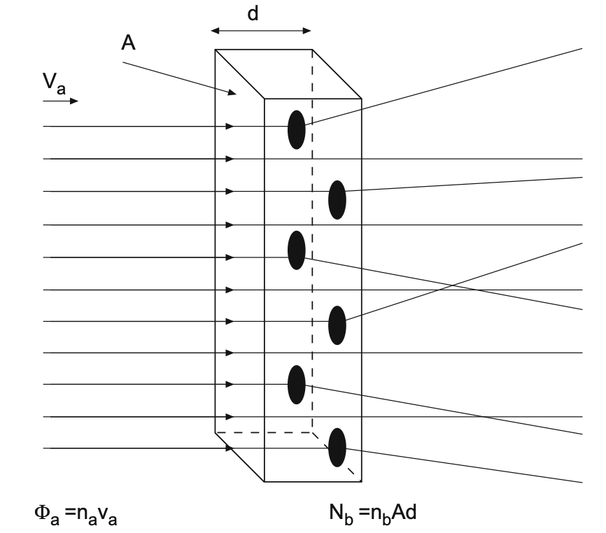
Figure 1.3: Measurement of the geometric reaction cross-section. The particle beam \(a\), coming from
the left with velocity \(v_a\) and density \(n_a\), corresponds to a particle flux \(\phi _a = n_a v_a\). It hits a macroscopic target of
thickness \(d\) and cross-sectional area \(A\). Some beam particles are scattered by the scattering centres of
the target, i.e., they are deflected from their original trajectory. The frequency of this process is a
measure of the cross-sectional area (cross-section) of the scattering particles. Source [3].
From Equation (1.1), the impact parameter \(b\) is related to the scattering angle \(\theta \) by
\begin{equation*} b = \frac {Z_1 Z_2 e^2} {4\pi \varepsilon _0 m v_0^2} \cot (\theta /2). \end{equation*}
Using \(m v_0^2 = 2E_{\text {kin}}\), this
becomes
For a particle to be deflected by \(\theta \ge 90^\circ \), it must approach the nucleus within an area defined by the
impact parameter corresponding to \(\theta = 90^\circ \)
and \(\theta = 180^\circ \) in which case \(b_{180}=0\). Note that because \(\cot (\theta /2)\) decreases as \(\theta \) increases,
larger scattering angles correspond to smaller impact parameters.
The cross section of a single nucleus for scattering through angles \(\theta \ge 90^\circ \) is therefore
For a sufficiently thin foil, the probability of an \(\alpha \)-particle undergoing more than one large-angle
scattering event is negligible. Therefore, the total effective cross section area by all nuclei within the beam
area element \(\Delta A\) is
Here, \(N\) is the number of platinum nuclei contained within the corresponding volume
element \(\Delta A\,d\):
\begin{equation*} N = n\,\Delta A\,d, \end{equation*}
where \(n\) is the number density of platinum nuclei:
\begin{equation*} n = \frac {\rho N_A}{M}, \end{equation*}
with \(\rho \) the mass density, \(M\) the molar mass, and \(N_A\)
Avogadro’s number.
The fraction \(f\) of incident particles scattered through angles \(\theta \ge 90^\circ \) corresponds to the probability that an
incident particle hits the effective area presented by the nuclei within the foil. This is equal to the ratio of
the total effective area \(A_{\text {eff},\ge 90^\circ }\) to the incident beam area \(\Delta A\):
\begin{equation*} f \simeq 1.3\times 10^{-4} \end{equation*}
of the incident \(\alpha \)-particles are scattered through angles \(\theta \ge 90^\circ \), corresponding to
roughly one particle in \(8\times 10^3\).
It is usually clear what we mean when we talk about the size of a macroscopic object. For
sub-microscopic objects such as nuclei, however, we need to be more careful. A nucleus is not a perfectly
hard sphere with abrupt boundaries, so what do we mean by its size? What is required is an operational
definition of the nuclear radius.
(i) Scattering of \(\alpha \)-particles with initial kinetic
energy \(E_{\mathrm {kin}} = 40\,\mathrm {MeV}\) for different impact parameters \(b\). (a)
Illustration of the dependence of the scattering
angle \(\theta \) on \(b\). (b) Comparison of experimental
scattering rates \(S(\theta )\) with values calculated for pure
Coulomb scattering at \(E_{\mathrm {kin}} = 40\,\mathrm {MeV}\).
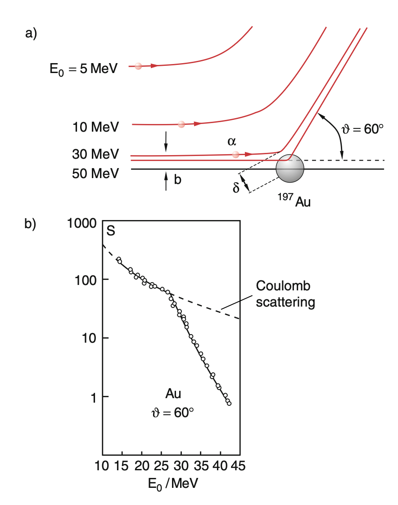
(ii) Scattering of \(\alpha \)-particles on gold nuclei. (a)
Relation between initial energy \(E_0\) and impact
parameter \(b\) for a fixed scattering angle \(\theta \). (b)
Scattering rate \(S\) at \(\theta = 60^\circ \) as a function of the initial
energy \(E_0\), compared with the prediction of Coulomb
scattering.
Figure 1.4: Energy and angular dependence of \(\alpha \)-particle scattering. Source [1].
By increasing the energy of a particle incident on a nucleus, we can probe progressively smaller
distances \(\delta \). If we probe distances below a critical value \(\delta _N\), the observed angular distribution \(N(\theta )\) of scattered
particles begins to deviate from the distribution calculated for a pure Coulomb potential. In a simplified
model, \(\delta _N\) is interpreted as the nuclear radius \(R_N\).
For a given projectile energy \(E_0\), deviations of \(N(\theta )\) from Coulomb scattering are observed for angles \(\theta > \theta _k\), where
\(\delta (\theta ) \approx R_N\); see Fig. 1.3i. Conversely, for fixed \(\theta \) and varying \(E_0\), deviations occur when \(E_0 > E_k\) such that \(\delta (E_0) < R_N\); see
Fig. 1.3ii.
At high angles or energies the projectile’s distance of closest approach becomes small enough and the
particle can interact with the nucleus via the strong nuclear force. The observed “cliff” marks the
threshold where the particle begins to probe the internal nuclear structure.
An analysis of high-energy \(\alpha \)-particle scattering was performed in 1920 by James Chadwick. His results
showed that the nuclear radius \(R_N\) for an element with mass number \(A\) follows a relationship of the form
This shows that the nuclear radius scales with the cube root of the mass number. Consequently, the
nuclear volume is proportional to \(A\). Early experiments established the \(A^{1/3}\) scaling law, but they lacked the
resolution to probe the details of the nucleus.
Early experiments were performed with \(\alpha \)-particles as probes. This means that Coulomb forces as well as
nuclear forces contribute to the scattering. For electrons, only the electromagnetic interaction is relevant,
so one essentially measures the charge distribution. Many high-precision measurements using
high-energy electrons have been carried out at different accelerators since the middle of the
1950s.
Scattering of electrons from a nuclear potential is a three dimensional quantum mechanical problem
that will be covered in next year’s particle physics module.
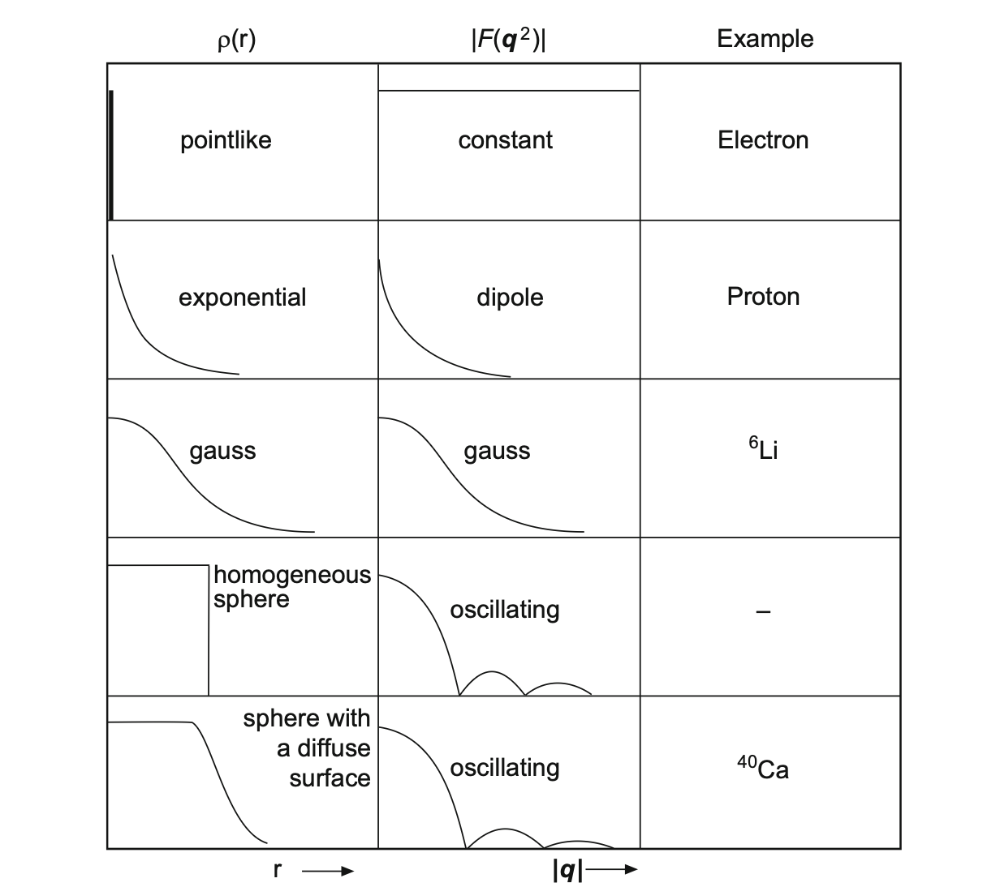
Figure 1.5: Relation between the radial charge distribution \(\rho (r)\) and the corresponding form factor. A
constant form factor corresponds to a point-like charge; a dipole form factor to a charge distribution
which falls off exponentially; a Gaussian form factor to a Gaussian charge distribution; and an
oscillating form factor corresponds to a homogeneous sphere with a more or less sharp edge. All
nuclei except for the lightest ones, display an oscillating form factor. Source [3].
The basic idea is the following. The differential cross section for the elastic scattering of an electron
from a nucleus with a finite charge distribution \(\rho (r)\) is given by the scattering cross section from a point
charge, corrected by a form factor that accounts for the spatial extent of the charge distribution:
where \(\mathbf {p}_i\) and \(\mathbf {p}_f\) are the initial and final electron momenta,
respectively. The form factor depends on the momentum transfer and on the charge density
\(\rho (r)\).
In physical terms, the form factor gives the amplitude associated with a momentum transfer \(\mathbf {q}\) arising
from a given charge distribution. In the non-relativistic limit the form factor \(F(\mathbf {q}^2)\) is the Fourier transform of
the charge density, which transforms the description from position space to momentum space
(or wave-number space, since \(\mathbf {p}= h/\lambda = \hbar \mathbf {k}\)). The relation between the charge density distribution and
the form factor is illustrated in Fig. 1.5 for a few representative cases. Given experimental
scattering data, one can determine the form factor and, from it, infer the charge density \(\rho (r)\); see
Fig. 1.6.
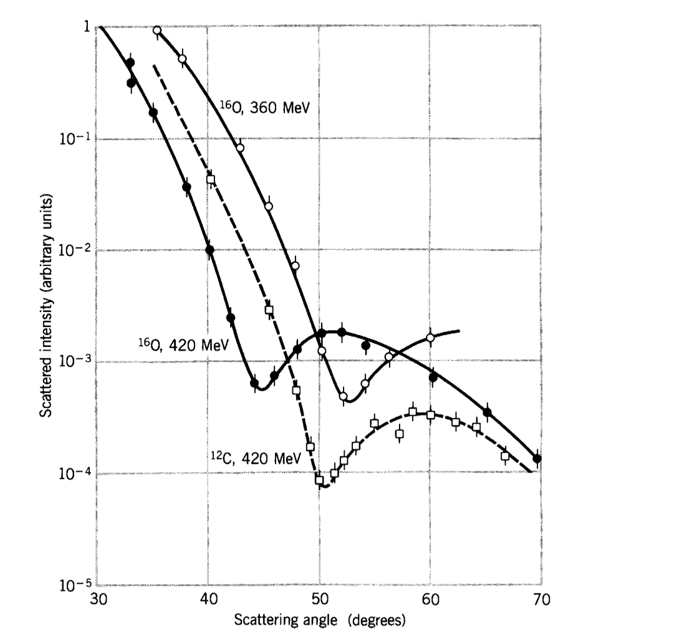
Figure 1.6: Electron scattering from \(\ce {^{16}O}\) and \(\ce {^{12}C}\). Source [4].
The nuclear charge density, except for very light nuclei, can be described by the Fermi distribution
(also known as the Woods–Saxon distribution):
where \(R_{1/2}\) is the half-density radius, i.e. the radius at which
the charge density falls to 50% of its central value, and \(d\) characterizes the surface thickness of the
nucleus.
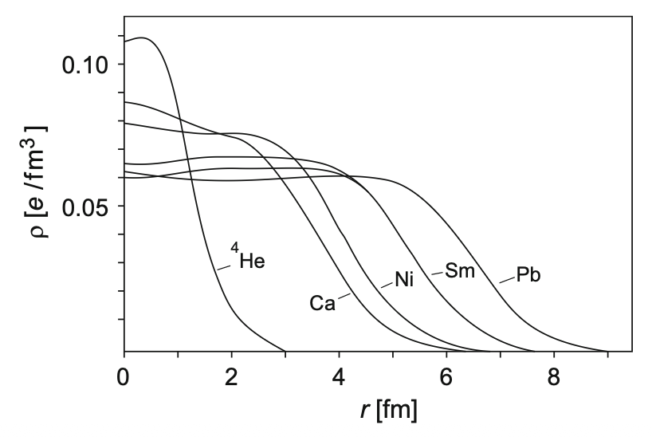
(i) Radial charge distributions of various nuclei.
These charge distributions can be approximately
described by the Fermi distribution. Source [3].
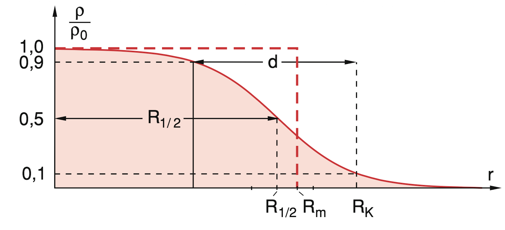
(ii) Matter density of the nucleus, where \(R_{1/2}\) represents
the half-density radius and \(d\) represents the surface
thickness. \({R_m}^2 = \langle r^2 \rangle \). \(R_K\) is the equivalent hard-sphere radius \(R_K = \sqrt {5/3} R_m\).
Source [1].
Figure 1.7: Nuclear charge and matter density distributions.
Fits of this distribution for various nuclei can be seen in Fig. 1.7. From these results, the following
conclusions can be drawn:
The charge density, which is essentially the proton distribution within the nucleus, is
approximately constant in the nuclear interior and falls rapidly to zero at the nuclear surface.
The half-density radius \(R_{1/2}\) increases slowly with increasing mass number \(A\) and is approximately
proportional to \(A^{1/3}\).
The thickness of the nuclear surface \(d\) is nearly the same for all nuclei.
The central charge density \(\rho (0)\) decreases slowly with increasing mass number \(A\). If one takes the
presence of the neutrons into account by multiplying by \(A/Z\) one finds an almost identical matter
density in the nuclear interior for nearly all nuclei.
If we approximate the nucleus by a homogeneously charged sphere, then the equivalent hard sphere
radius \(R_K\) is given by
There are many good resources on relativistic kinematics, although most require some prior familiarity
with relativity. A good introduction is Chapter 3 of [5], upon which parts of this section are
based.
is invariant, i.e. the same in all
inertial frames. The quantity \(m\) is called the invariant mass, rest mass, or proper mass, and will hereafter
simply be referred to as the mass. \(E\) is the energy and \(\mathbf {p}\) is the momentum. For a massless particle
equation 2.1 reduces to
\begin{equation*} E = |\mathbf {p}|c. \end{equation*}
You will also learn that the energy and momentum of a massive particle are
given by
Formulas 2.1 and 2.2 are part of the Special Relativity Formula Sheet in the exam. In both
the Relativity and Sub-Atomic sections you are expected to be able to use them alongside
conservation of energy and momentum to derive and analyse kinematics.
In the rest frame of a massive particle, the momentum \(\mathbf {p}\) is zero. Therefore, equation 2.1 becomes
This is perhaps the most famous formula in physics [6]. It defines the rest energy, which we
will denote as \(E_{\text {rest}}\).
The energy is the sum of the kinetic energy and the rest energy. Therefore, the kinetic energy for a
massive particle is
\begin{equation*} T = E - E_{\text {rest}} = \gamma mc^2 - mc^2 = (\gamma - 1)mc^2. \end{equation*}
In the classical case, we say that energy is converted from kinetic energy to some internal form
(thermal, energy of a spring etc), or vice versa. In the relativistic treatment we say that it goes from
kinetic energy to rest energy and vice versa. An important conceptual point is that all internal forms of
energy are reflected in the rest energy of an object and, via \(E_{\text {rest}} = mc^2\), in its mass. At the macroscopic
level, and even at the atomic level, internal energies are very small compared to the typical
rest energies of a system’s constituent parts. This is why they can be neglected in everyday
life. Only in nuclear and particle physics are typical internal energies comparable to rest
energies.
In the relativity part of the course you will see that the classical mechanics expression for the kinetic
energy
\begin{equation*} T = \frac {1}{2}mv^2, \end{equation*}
is an approximation valid at low velocities in a given inertial reference frame. We will refer to this
as the non-relativistic approximation.
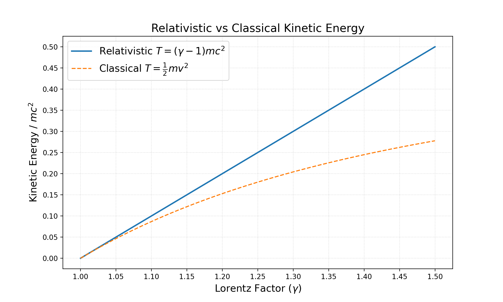
Figure 2.1: Comparison of the non-relativistic approximation for the kinetic energy with the
relativistic expression as a function of the Lorentz factor.
A common issue in nuclear physics is that sometimes the non-relativistic approximation is sufficient,
and sometimes it is not. The comparison is shown in Fig. 2.1. We see that up to \(T/mc^2 \approx 0.05\) (corresponding to \(\gamma \approx 1.05\) and
\(\beta \approx 0.3\)), the non-relativistic approximation is sufficient. This situation occurs quite frequently in nuclear
physics. In particle physics, which deals with much higher energies, the full relativistic treatment needs to
be used, this typically implies using the four-vector formulation for energy and momentum (see
Appendix C.1 and reference [5]).
Since whenever we weigh an object we are measuring not only the rest energies (\(mc^2\)) of its constituent parts,
but also all of their kinetic and interaction energies, we can attempt a “silly” calculation. Consider a
potato with a mass of \(m = 0.25~\mathrm {kg}\) at room temperature (\(20^\circ \mathrm {C}\)). We heat it to the boiling point (\(100^\circ \mathrm {C}\)), assuming it has the
specific heat capacity of pure water (\(s \approx 4000~\mathrm {J\,kg^{-1}\,^\circ C^{-1}}\)). The heat required is
If we ignore neutrino oscillations, as we will do in this course, we can also include:
Lepton flavour.
Furthermore, the typical energies we will be dealing with are low compared to those required to create
baryon–antibaryon pairs. Therefore, in the context of this course, the conservation of baryon number
effectively implies the conservation of:
Nucleon number.
Conserved but Not Lorentz Invariant
This category includes energy and momentum. If the energy and momentum conservation laws hold
in one inertial reference frame,
The individual values of energies and momenta change between frames, they are not Lorentz
invariant, but the equality itself is preserved.
Lorentz Invariant but Not Conserved
Mass, as defined above, is Lorentz invariant, i.e. it has the same value in all inertial reference
frames. However, it is not necessarily conserved. For example, a particle can decay into other
particles, changing the total mass of the system. Similarly, rest energy might or might not be
conserved.
Neither Conserved nor Lorentz Invariant
Kinetic energy, and therefore velocity, are neither conserved nor Lorentz invariant. Kinetic energy can
be converted into rest energy and vice versa.
Consider a system of \(Z\) protons and \(N = A - Z\) neutrons with total energy \(E_{0}(A,Z)\). Now consider a nucleus with mass
number \(A = Z + N\) and energy \(E_\mathcal {N}(A,Z)\). The existence of stable nuclei implies that the bound system has a lower energy
than the separated nucleons,
We define the nuclear binding energy\(E_B\) as the energy required to completely disassemble a nucleus into
free, unbound protons and neutrons. This implies
Figure 2.2: Binding energy per nucleon as a function of atomic mass number \(A\). The most stable
nuclei are those with \(A \approx 62\), such as nickel. Source Wikipedia.
The above expressions use the masses of the nucleus and of free protons and neutrons. To the
accuracy of the approximation in which the atomic electron binding energy (which is of the order of a
few keV) is ignored, it is more practical to work with atomic masses\(M(A,Z)\). As an example, for \(\ce {^4_2He}\)
the nuclear mass is \(M_\mathcal {N} = 4.0015061\,\text {u}\), while the atomic mass is \(M = 4.002603254\,\text {u}\). When using atomic masses, equation 2.4
becomes
\begin{equation} \label {eq:mass_defect_atomic} \Delta M(A,Z) = Z M_H + N m_n - M(A,Z) = \frac {E_B(A,Z)}{c^2}, \end{equation}
where \(M_H\) is the atomic mass of the neutral hydrogen atom. The \(Z\) electrons included in
the \(Z\) hydrogen atoms are balanced by the \(Z\) electrons present in the neutral atom of atomic
number \(Z\), so the electron masses, but not the electrons’ atomic binding energy equivalent,
cancel.
The binding energy per nucleon \(E_B/A\) increases rapidly with increasing atomic mass number \(A\), reaches a
maximum near \(\ce {^{62}_{28}Ni}\), and then decreases slowly for heavier nuclei (see Fig. 2.2). If each nucleon in a nucleus
exerted the same attractive force on all other nucleons, the binding energy per nucleon would continue to
increase as additional nucleons were added; that is, \(E_B/A\) would be proportional to \(A\). The fact that \(E_B/A\) is not
proportional to \(A\) indicates that the binding energy arises primarily from the strong, short-range nuclear
force.
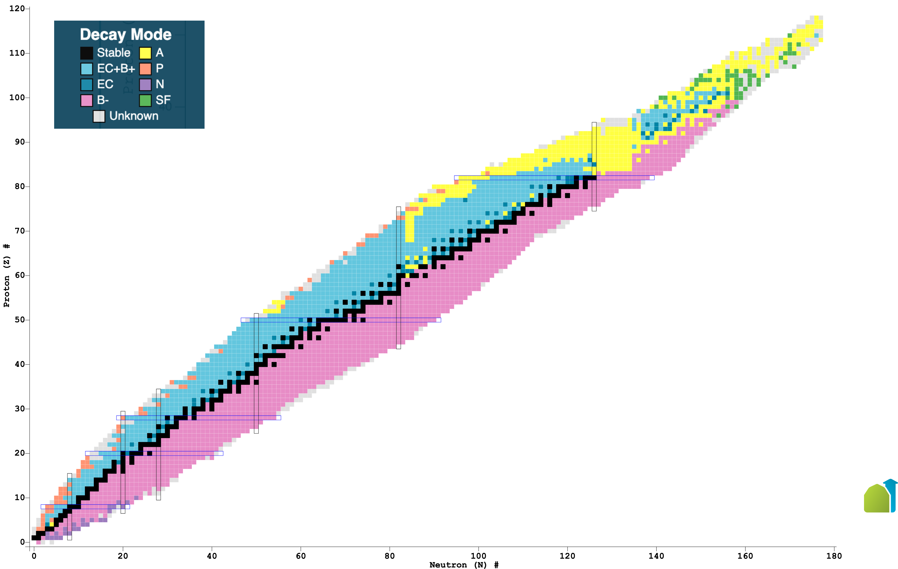
Figure 2.3: Chart of nuclides classified by dominant decay mode. The black points indicate stable
nuclides. Nuclides with an excess of neutrons or protons are unstable. Above the stability line nuclei
decay via positive beta emission (blue region). Below the stability line nuclei decay via negative beta
emission (pink region). For large \(A\) values nuclei can decay via alpha emission (yellow region). For
even larger mass numbers spontaneous fission can occur (green points). Source NNDC.
The strong nuclear force is less well understood than the electromagnetic force, and its contribution to
the binding energy cannot be calculated analytically from first principles. It is known, however,
that the strong force is very short ranged, acting primarily between neighbouring nucleons,
whereas the electromagnetic interaction extends over the entire nucleus and beyond. A good
phenomenological model for the strong force between two nucleons is provided by the Yukawa potential
We conclude this section by considering the distribution of \(Z\) and \(A\) values for stable nuclei, shown in
Fig. 2.3 by black squares. For small \(Z\) there is a tendency for stable nuclei to have \(Z = N\). This reflects the
electric charge independence of the nuclear force. For larger nuclei, stable isotopes tend to have \(Z < N\). This is
due to the Coulomb repulsion between protons, which produces a repulsive potential proportional to \(Z^2\) and
becomes increasingly important for large \(Z\).
There is also a clear tendency for stable nuclei to have even numbers of protons (\(Z\)) and even numbers
of neutrons (\(N\)), as shown in Table 2.1. This suggests that nucleons of the same species tend to form
pairs.
For all but the very lightest nuclei, the binding energy is well reproduced by a semi-empirical formula
based on the idea that the nucleus can be treated as a liquid drop composed of nucleons. The liquid drop
model is based on two properties common to most nuclei, except those with very small \(A\):
Their interior mass densities are approximately constant.
Their total binding energies are approximately proportional to their masses, i.e.,
Both properties can be compared with analogous ones for macroscopic drops of an incompressible
liquid. For such classical liquid drops of various sizes:
Their interior densities are the same.
Their heats of vaporization are proportional to their masses.
Here, the heat of vaporization is the energy required to disperse the drop into its constituent molecules, and
is conceptually analogous to the binding energy of the nucleus.
Starting from the expression
\begin{equation} M_\mathcal {N}(A,Z) = \left ( Z m_p + N m_n \right ) - \frac {E_B(A,Z)}{c^2}, \end{equation}
we can develop a semi-empirical mass formula based on the analogy
between the nucleus and a classical liquid drop. It is, however, necessary to include terms that account for
nuclear properties whose origins are quantum-mechanical rather than classical. The individual
contributions can be seen in Fig. 2.4 and are described below.
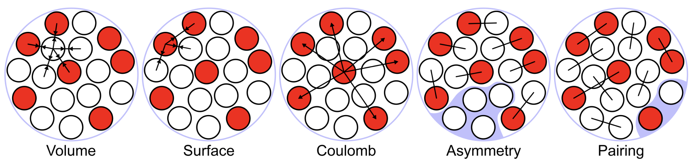
Figure 2.4: Illustration of the terms of the semi-empirical mass formula in the liquid-drop model
of the atomic nucleus. Source Wikipedia.
Volume Term:
The first contribution is associated with the force that keeps the nucleus together. If each nucleon
interacted with all other nucleons, this term would be proportional to \(A(A-1) \approx A^2\), implying a binding energy per
nucleon that increases with \(A\), in contradiction with experimental evidence. The short range of the
nuclear force implies that each nucleon interacts only with its nearest neighbours. If \(K\) is the
number of neighbouring nucleons, the contribution is proportional to \(KA \propto A\). The volume contribution
is therefore
\begin{equation*} E_{\text {volume}} = a_V A. \end{equation*}
This term is positive, corresponding to a negative contribution to the nuclear
mass.
Surface Term:
Nucleons at the surface of the nucleus experience fewer attractive interactions than those in the
interior. As a result, the binding energy is reduced by an amount proportional to the nuclear surface area.
This contribution is
Coulomb Term:
The repulsive Coulomb force between protons reduces the binding energy. Assuming the nuclear
radius as the typical separation between protons and noting that Coulomb repulsion acts only between
proton pairs, the Coulomb contribution is
Figure 2.5: The different contributions to the binding energy for \(A > 20\) Source [1].
Asymmetry Term:
Stable nuclei tend to have approximately equal numbers of protons and neutrons for low mass
numbers (\(N \approx Z\)). This effect is modelled by the asymmetry term
Pairing Term:
Experimental data show that nuclei with even numbers of protons and neutrons are more stable than
odd-odd nuclei. This effect is accounted for by the pairing term
The coefficients are obtained from fitting the experimental data. Their values can vary depending on
how they are fitted to the data. In these lectures we will be using the coefficients shown in Table 2.2. The
different contributions to \(E_B(A,Z)\) are plotted as function of \(A\) in Fig. 2.5.
Table 2.2: Coefficients of the semi-empirical mass formula.
Term
Symbol
Value (MeV)
Volume
\(a_V\)
15.8
Surface
\(a_S\)
18.3
Coulomb
\(a_C\)
0.714
Asymmetry
\(a_A\)
23.2
Pairing
\(a_\delta \)
12.0
You are not expected to memorise equation 2.7 or the values of the coefficients. In an examination
setting, these will be provided if needed. For homework or practice questions, you may refer to
this section.
The liquid drop model is based on a classical picture (with the asymmetry and pairing terms introduced
without formal justification), which provides accurate average masses and binding energies through the
semi-empirical mass formula. In this section, we will briefly discuss nuclear models that incorporate
quantum mechanics to explain additional properties of nuclei.
Figure 2.6: The left-hand diagram shows a nuclide with equal numbers (\(Z=N=4\)) of protons and neutrons.
In the ground state of the nucleus, these fill the lowest two available energy levels. The right-hand
diagram shows the case where one of the protons is replaced by a neutron. By the exclusion principle,
this extra neutron cannot go into one of the lowest two energy levels, as these are already filled.
It must go into the next energy level, so that the energy of such a nucleus in its ground state is
larger. Source [7].
The Fermi gas model assumes that each nucleon in the nucleus moves in an attractive average
potential that represents the net effect of its interactions with all other nucleons. Inside the nucleus,
where the nucleon density is approximately constant, this potential has an almost constant depth.
Outside the nucleus, it falls rapidly to zero over a distance comparable to the range of the nuclear force.
The resulting potential can, therefore, be approximated by a three-dimensional finite square well with a
radius slightly larger than the nuclear radius.
Such a system exhibits quantized energy levels. Furthermore, both protons and neutrons have spin \(s = 1/2\)
and are fermions; they therefore obey the Pauli exclusion principle. Consequently, each energy level can
be occupied by at most two protons and two neutrons, each pair having opposite spins; see
Fig 2.6.
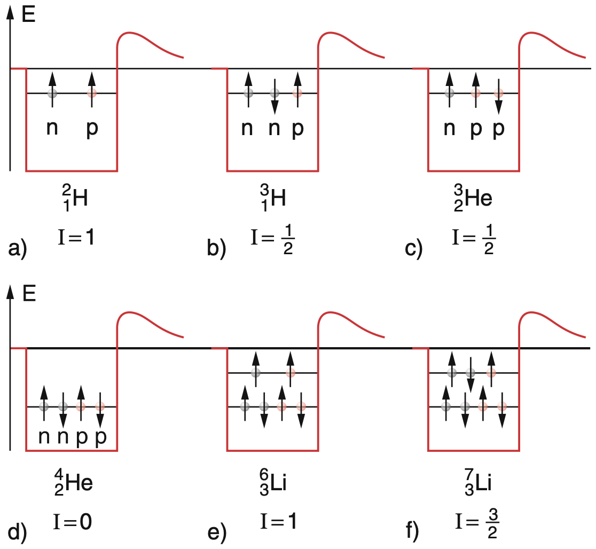
Figure 2.7: Build-up scheme with protons and neutrons for some light nuclei, observing the
Pauli-principle. Source [1].
The tendency for nuclei to have \(Z \approx N\), which corresponds to the asymmetry term of the liquid drop model,
can be understood within the Fermi gas model. Consider a nucleus with a small atomic number \(Z\), for
which the Coulomb repulsion between protons can be neglected in comparison with the much stronger
nuclear force. In this case, the nucleus can be treated as two independent Fermi gases: one for protons
and one for neutrons. Both types of nucleons move in essentially the same average nuclear
potential.
As shown in Fig. 2.7, for small \(Z\) the energy levels of the proton and neutron systems are the same in
this approximation. For a fixed mass number \(A\), the total energy of the nucleus is minimized when \(Z = N\), since
any deviation from this condition would require nucleons to occupy higher-energy levels than
necessary.
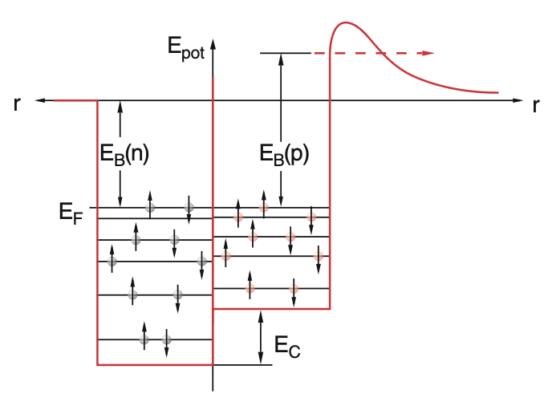
Figure 2.8: Comparison of the potentials for protons and neutrons with occupied energy levels. The
highest occupied level corresponds to the Fermi energy \(E_F\). The Coulomb repulsion energy for protons
is denoted \(E_C\), and the total binding energy per nucleon is \(E_B\). Source [1].
For large \(Z\), the proton well becomes shallower due to Coulomb repulsion, as seen in Fig. 2.8, which is
why \(N > Z\) becomes more stable in heavier nuclei.
The Fermi gas model suggests that bound nucleons move independently in an average nuclear potential.
Although it explains global features such as \(Z \approx N\) and the asymmetry term, it cannot account for certain
exceptionally stable configurations. These occur at specific proton or neutron numbers, known as the
magic numbers:
\begin{equation*} N = 2,\;8,\;20,\;28,\;50,\;82,\;126, \end{equation*}
\begin{equation*} Z = 2,\;8,\;20,\;28,\;50,\;82. \end{equation*}
Nuclides in which \(Z\) is a magic number tend to have an above-average number of stable
isotopes. There are several doubly magic nuclides, for which both \(Z\) and \(N\) are magic, including
All these
nuclides have substantially higher binding energy per nucleon than nuclides with neighbouring values of \(N\)
or \(Z\).
The shell model is motivated by the model used to describe atomic structure. Electrons
fill shells in order of increasing energy, consistent with the Pauli principle, forming an inert
core and valence electrons that determine chemical properties. Closed-shell atoms occur at
\begin{equation*} Z = 2,\;10,\;18,\;36,\;54. \end{equation*}
In nuclei, protons and neutrons fill separate shells in an average nuclear potential. Unlike the
Coulomb potential, the nuclear potential is not known exactly. Since the strong force is short-ranged, the
nuclear potential approximately follows the nucleon density distribution. For medium and heavy
nuclei, a Fermi distribution form gives a good description:
where \(\vec {L}\) and \(\vec {S}\) are the orbital and spin angular momentum operators of a
nucleon. The spin–orbit term splits levels with \(j = l \pm \tfrac {1}{2}\) and is essential for reproducing the observed
magic numbers. With these ingredients, the shell model explains binding energies, spin and
parity assignments, magnetic moments, excited states, and the enhanced stability near closed
shells.
Nuclear decay occurs whenever a nucleus containing a given number of nucleons has a total
energy greater than that of an allowed final configuration. Unstable nuclei decay spontaneously
after a finite time into other nuclei, either by emission of particles (\(\alpha \), \(n\), \(\beta ^{-}\), \(\beta ^{+}\)) or by fission into
fragments. Excited nuclei may also transition to lower energy states through the emission of \(\gamma \)
radiation.
Let me make a distinction between something being possible and something being probable. In physics,
something is possible if it does not violate any conservation laws. For example, decay processes occur only
when the energy of the initial state exceeds that of the final state.
Something being possible does not make it probable. If I was playing the lottery, it would be possible
to win it, but not probable. Similarly, decays can be possible while occurring with very low
probability.
Consider many identical nuclei at time \(t=0\). Let \(N(t)\) denote the number of undecayed nuclei at time \(t\). If \(\lambda \) is the
decay constant (probability per unit time that a nucleus decays), then the number of undecayed nuclei
satisfies
\begin{equation*} \frac {dN}{dt} = -\lambda N, \end{equation*}
where the minus sign reflects the decrease in \(N\).
The mean lifetime \(\tau \) of the unstable particles is the time-average of the statistically varying decay times
\(t\) of the individual particles, weighted by the number \(\lambda N(t)\) of particles decaying within the interval \(dt\):
The average number of decays during a time interval \(t\) is
\begin{equation*} \Delta N = \mathcal {A}(t)\ t = \lambda \ N(t)\ t, \end{equation*}
. but there will be random fluctuations
around this value. A measure of the size of these fluctuations is given by the standard deviation, which for
\(\Delta N > 5\) can be approximated by
where \(\hbar \) is the reduced Planck constant. This formulation is
particularly convenient when describing resonances and unstable particles in terms of energy
spectra.
Radiocarbon dating of organic material relies on the radioactive isotope \(\ce {^{14}C}\), which is continuously
produced in the upper atmosphere by the interaction of cosmic rays with nitrogen. If the
cosmic-ray flux remains approximately constant, the ratio of \(\ce {^{14}C}\) to the stable isotope \(\ce {^{12}C}\) in living
organisms reaches an equilibrium value of about \(1.3 \times 10^{-12}\). Carbon-14 undergoes \(\beta ^-\) decay,
A fossil containing \(5~\mathrm {g}\) of carbon produces \(3600\) decays in \(2~\mathrm {h}\). Estimate its age.
The number of \(\ce {^{14}C}\) nuclei in a living organism is
\begin{equation*} N_0(\ce {^{14}C}) = f\, m \frac {N_A}{A(\ce {C})}, \end{equation*}
where \(f = 1.3 \times 10^{-12}\) is the isotopic fraction, \(m\) is the carbon
mass, \(N_A\) is Avogadro’s number, and \(A(\ce {C}) = 12.011~\mathrm {g\,mol^{-1}}\) is the molar mass of carbon. Note that the atomic mass in
atomic mass units and the molar mass in g/mol have the same numerical value, but differ in
units.
A radioactive nuclide can sometimes decay through more than one channel, each with its own decay
constant. Thus a parent nuclide \(P\) can decay into one of several daughter nuclides \(D_i\), each with partial decay
constant \(\lambda _i\).
The total decay rate is the sum of the partial decay constants, so that
We now consider the case of secular equilibrium. Secular equilibrium occurs in a decay chain when the
parent nuclide has a much longer lifetime than any of its daughters (\(\lambda _1 \ll \lambda _k\)). On a time scale long compared to
the daughters’ lifetimes but short compared to the parent’s, the daughters reach a steady
state.
This is similar to a series of stacked water buckets. The parent bucket has a tiny pinhole (\(\lambda _1\) is very
small). Water drips out. Because the hole is tiny, the drip rate remains constant for a relatively long time.
The daughter bucket has a much larger hole (\(\lambda _2\) is large), eventually leading to the outward flow exactly
matching the slow input flow from the parent bucket.
In this steady state, the supply of nuclei from the parent balances the rapid decay of the daughters
and the daughter population reaches a steady-state value. This corresponds to
Starting with 1 mol of pure \(\ce {^244Pu}\), \(N_1 = N_A = 6.022\times 10^{23}\). Since the parent half-life is much longer than
the daughters’, and the lifetime of the parent is much longer than 30 days, the system reaches secular
equilibrium:
\(\alpha \)-decay is the radioactive emission of an \(\alpha \) particle, a nucleus of \(^{4}_{2}\mathrm {He}\), consisting of two protons and two
neutrons. The \(\alpha \)-decay is described by the process
The daughter nuclide has two protons and two neutrons
(four nucleons in total) fewer than the parent nuclide. The \(\alpha \) particle is particularly favoured as the
emitted particle because it is a very stable, tightly bound structure with a high binding energy per
nucleon; see Fig. 2.2.
Let us first consider conservation of energy in the \(\alpha \)-decay process. We assume the initial decaying nucleus \(P\)
to be at rest. Then the energy of the initial system is just the rest energy of \(P\), \(m_Pc^2\). The final state consists of \(D\)
and \(\alpha \), each of which will be in motion (to conserve momentum). Thus the final total energy is
and
the decay occurs spontaneously only if \(Q>0\). Typically, \(Q\) values are calculated from atomic mass
tables. When the masses are expressed in atomic mass units (u), using \(c^2 = 931.49\, \mathrm {MeV/u}\) gives \(Q\) directly in
MeV.
The above discussion means that the process can occur only if the binding energy of the daughter
nuclide \(^{A-4}_{Z-2}\mathrm {D}\) plus the binding energy of the \(\alpha \) particle exceeds the binding energy of the parent nuclide \(^{A}_{Z}\mathrm {P}\). The
contributions from the masses of the individual protons and neutrons cancel because their total number is
unchanged. Hence,
Since the binding energy per nucleon of an \(\alpha \) particle is particularly large (see
Fig. 2.2), this condition is satisfied for many nuclides. Using the measured value \(E_B(4,2) = 23.8\) MeV, we can use the
above equation to calculate the Q-values using the semi- empirical mass formula from the Liquid Drop
Model.
If the original nucleus \(P\) is at rest, its momentum is zero, and conservation of momentum requires that \(D\)
and \(\alpha \) move with equal and opposite momenta:
\(\alpha \) decays typically release energies of order \(5~\mathrm {MeV}\). Since this is much smaller than the rest energies of the
particles, \(T \ll mc^2\), we may safely use the non- relativistic approximation. Writing \(T = p^2/2m\), the momentum relation gives
Typically, the \(\alpha \) particle carries about \(98\%\) of the \(Q\) value, while the much heavier daughter
nucleus carries only about \(2\%\). This recoil energy is not negligible. For a representative \(Q \approx 5~\mathrm {MeV}\), the recoiling
nucleus has an energy of order \(100~\mathrm {keV}\), which exceeds typical atomic binding energies in solids. If the decay
occurs near the surface of a source, the recoiling nucleus may also escape into the surrounding
material.
A theory developed in 1928 by Gamow explains the mechanism of \(\alpha \) decay. In this theory, the \(\alpha \) particle is
assumed to be preformed inside the parent nucleus, moving within a spherical region determined by the
daughter nucleus. It is formed when two protons from the highest proton energy levels and
two neutrons from the highest neutron energy levels combine to form a quasi-bound state.
Inside the nucleus the \(\alpha \) particle experiences both the short-ranged attractive strong nuclear
force and the long-range Coulomb repulsion from the daughter nucleus. At small separations
the strong force dominates, producing a potential well that confines the \(\alpha \) particle. Beyond
the nuclear surface the strong force falls rapidly to zero, and only the Coulomb repulsion
remains.
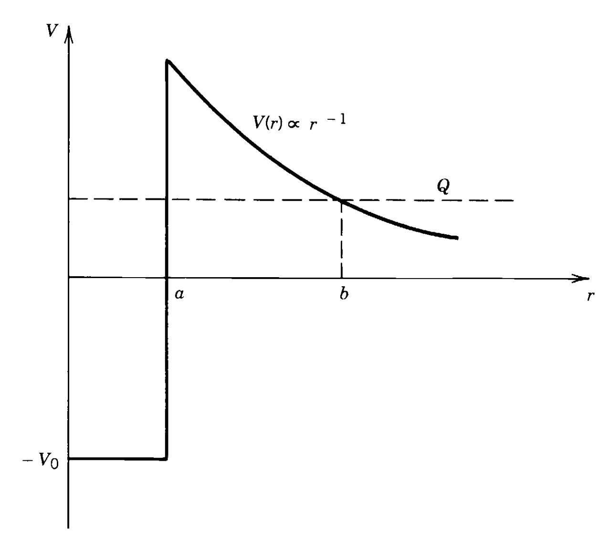
Figure 3.3: Relative potential energy of the \(\alpha \)-particle / daughter-nucleus system as a function of
separation. Inside the nuclear surface at \(r = a\), the potential is represented as a square well; beyond the
surface, only the Coulomb repulsion operates. The \(\alpha \) particle tunnels through the Coulomb barrier
from \(a\) to \(b\). Source [4]
With these assumptions, we can estimate the Coulomb barrier felt by the emitted particle at the
nuclear surface. The spatial range of the nuclear force can be approximated by
The situation is
illustrated in Fig. 3.3, where \(a\) can be taken as the sum of the nuclear radius and the \(\alpha \) particle radius.
Classically, the \(\alpha \) particle could escape only if its kinetic energy exceeded this maximum. The kinetic
energy should then be the potential maximum minus the recoil energy of the daughter nucleus. However, \(V(r) \approx 27~\mathrm {MeV}\)
is much larger than the observed kinetic energy of \(4.785~\mathrm {MeV}\). We can identify three regions of interest in
Fig. 3.3:
-
\(r < a\): Inside the nucleus, the \(\alpha \) particle moves in a potential well of depth \(-V_0\) (with \(V_0\) positive).
Classically, it can move freely in this region with kinetic energy \(Q + V_0\), but cannot escape.
-
\(a < r < b\): The potential barrier region. Here the potential energy exceeds the total available energy
\(Q\). Classically, the \(\alpha \) particle cannot enter this region from either side, since the kinetic energy
would have to be negative.
-
\(r > b\): Classically allowed region outside the barrier. If the \(\alpha \) particle reaches this region, it escapes.
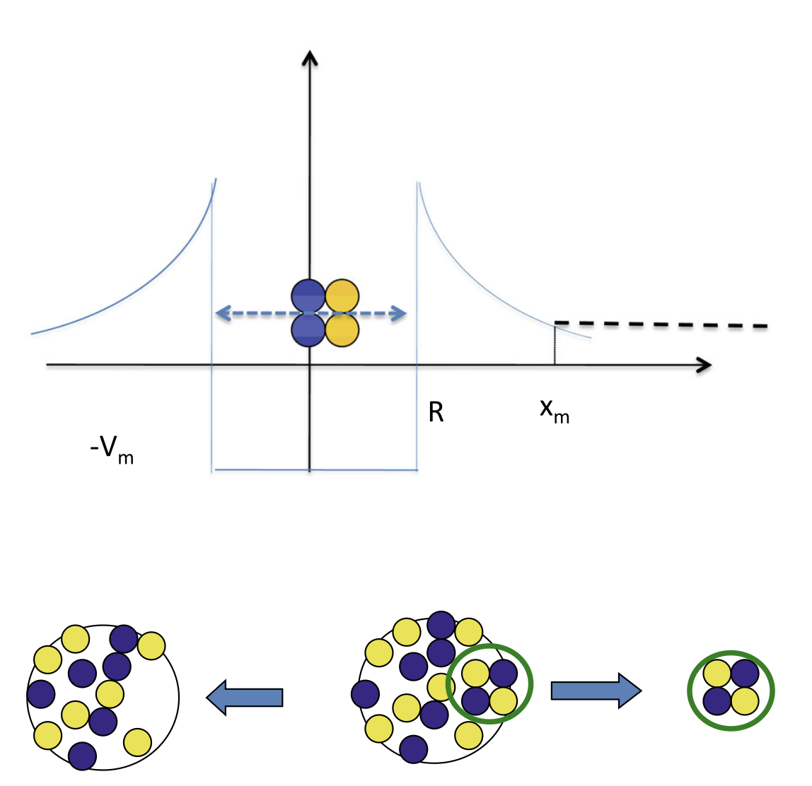
Figure 3.4: Alpha particles are tightly bound systems and tend to preserve their identity inside the
nucleus. They oscillate back and forth between the boundary of the nucleus. When they hit the
boundary, they have a finite probability to tunnel through the barrier. Source [8]
Quantum mechanically, there is a finite probability for the \(\alpha \) particle to tunnel through this barrier (see
Table B.1). This tunnelling accounts for the fact that \(\alpha \)-unstable nuclei do not decay immediately. The
situation can be seen in Fig. 3.4. The exact treatment can be found in many textbooks (for
example, [9]).
The general idea can be described as follows. The probability of an alpha decay per unit of time
depends on the rate \(f\) with which the \(\alpha \)-particle bumps against the inner wall of the potential barrier, and
the probability of penetrating the barrier that is the transmission probability \(T\). The resulting equation is
\begin{equation*} P = f \times T. \end{equation*}
Since the decay constant \(\lambda \) is also the decay probability per unit time we have
\begin{equation*} \lambda = f \times T, \end{equation*}
The \(\alpha \) particles move with a speed of the order \(10^9~\mathrm {cm/s}\) (if you wonder the 0.05 \(c\) we calculated in the example
is \( \approx 1.5 \times 10^9\) cm/s), repeatedly encountering the barrier. For a nucleus like Uranium, with a radius of
approximately \(10^{-12}~\mathrm {cm}\), the particle encounters the barrier around \(f=10^{21}\) times per second.
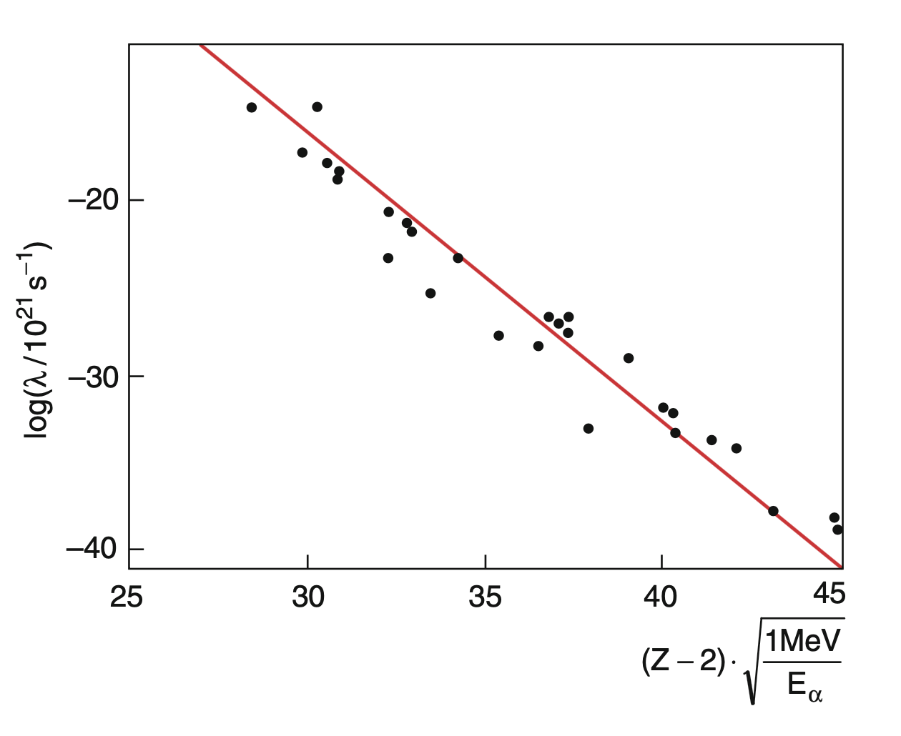
Figure 3.5: Experimental verification of the Gamow model for the \(\alpha \)-decay. Source [1]
For the transmission probability we have
\begin{equation*} T \propto e^{-G}, \end{equation*}
where
\begin{equation*} G \propto \frac {Z-2}{\sqrt {E_\alpha }}. \end{equation*}
An exact treatment can be found in many
textbooks; for example [9]. Here we are interested in the physical significance of this result. The width of
the Coulomb barrier through which the \(\alpha \)-particle must tunnel increases for smaller values of \(E_\alpha \) and larger
values of \(Z\). As a result the tunnelling probability decreases.
If the above presented theory is correct then we would expect that
We can estimate the distance through which the \(\alpha \) particle must tunnel. The outer point \(b\) is defined by the
condition that the Coulomb potential equals the decay energy \(Q\). Beyond this point the particle is
classically free.
The most basic \(\beta \)-decay process is the conversion of a neutron into a proton or a proton into a neutron. In
a nucleus, \(\beta \) decay changes both \(Z\) and \(N\) by one unit,
\begin{equation*} Z \rightarrow Z \pm 1, \qquad N \rightarrow N \mp 1 \end{equation*}
so that
\begin{equation*} A = Z + N \end{equation*}
remains constant. Thus \(\beta \) decay provides a
convenient way for an unstable nucleus to slide down the mass parabola at constant \(A\) (see Fig. 3.6) and
approach the stable isobar.
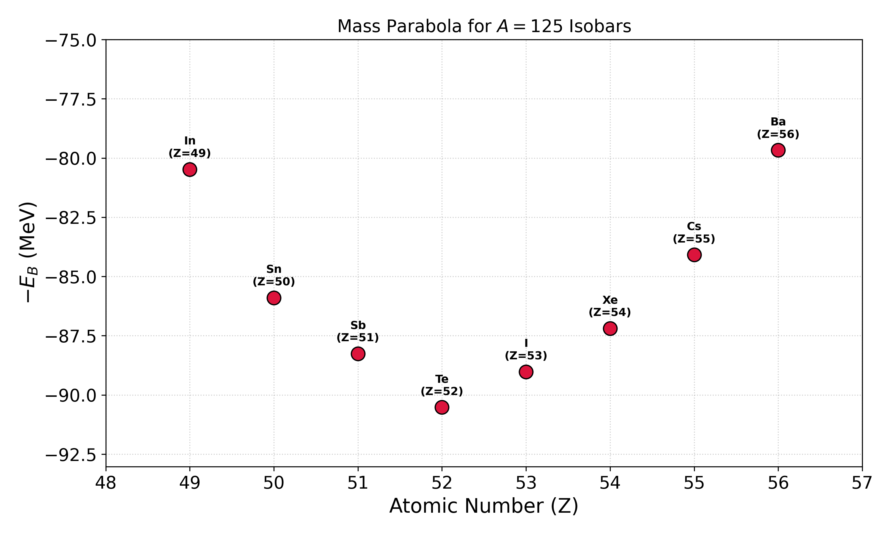
Figure 3.6: Mass parabola for \(A=125\) isobars.
Early experiments showed that the negative \(\beta \) particles have the same electric charge and
charge-to-mass ratio as ordinary electrons. If electrons were confined within the nuclear volume, their
spatial position would be limited to
\begin{equation*} \Delta x\,\Delta y\,\Delta z \sim \Delta V \sim (R_N)^3 . \end{equation*}
According to Heisenberg’s uncertainty relation this implies a
momentum uncertainty
This is many orders of magnitude larger
than the typical electrostatic binding energy (\(|E_B| \sim 10^{6}\ \mathrm {eV}\), electron-proton Coulomb energy in an atom).
Hence electrons cannot be stable inside the nucleus. Therefore, the electron must be created
from the available decay energy at the instant of decay and is immediately emitted. This
contrasts with \(\alpha \) decay, where the \(\alpha \) particle may be considered as already existing inside the
nucleus.
A puzzling experimental observation, already seen in the 1910s and studied extensively in the 1920s, was
the continuous energy distribution of the \(\beta \) electrons. In \(\alpha \) decay the emitted particles have sharp,
well-defined energies determined by the difference in mass energy between the initial and final states. If \(\beta \)
decay was also a two-body process, one would expect a unique electron energy. Instead, the spectrum is
continuous,see Fig. 3.7, with
Figure 3.7: Continuous energy distribution of the electrons in \(\beta \)-decay. Source [1]
To preserve conservation of energy and momentum, one must assume that an additional neutral
particle is emitted which carries away the missing energy and momentum,
Pauli postulated in 1930 a
neutral particle with spin \(1/2\). Later, Fermi developed a theory of \(\beta \) decay that incorporated this particle and
named it the neutrino (“little neutral one”), since the name neutron had already been taken in 1932
after Chadwick’s discovery of the neutral nuclear particle with nearly the same mass as the
proton.
where
the proton recoil \(T_p \sim 0.3\,\mathrm {keV}\) is negligible. Maximum-energy electrons correspond to minimum-energy
antineutrinos. We will regard the neutrino as massless:
\begin{equation*} E_\nu = |\boldsymbol {p}_\nu | c. \end{equation*}
For the electron, kinetic and total energies
are related by
As we have
seen a free neutron can decays spontaneously, since its mass is greater than the mass of the decaying
products. Inside a nucleus, the decay occurs if the converted proton can occupy an available energy level,
see Fig. 3.8.
Thus, \(\beta ^-\) decay transforms a nucleus \(\ce {^A_Z X}\) into \(\ce {^A_{Z+1} Y}\), emitting an electron and an antineutrino:
\begin{equation*} \ce {^{A}_{Z} X -> ^{A}_{Z+1} Y + e^- + \bar {\nu }_e}. \end{equation*}
This process is
possible only if the resulting neutron can occupy a lower energy level than the original proton; a free
proton cannot undergo this decay, see Fig. 3.9.
Thus, \(\beta ^+\) decay transforms \(\ce {^A_Z X}\) into \(\ce {^A_{Z-1} Y}\), emitting a positron and a neutrino:
\begin{equation*} \ce {^A_Z X -> ^A_{Z-1} Y + e^+ + \nu _e}. \end{equation*}
When using atomic masses,
the positron mass does not cancel:
This creates a
vacancy in the K-shell (binding energy \(E_1\)), which can be filled by an electron from a higher shell (energy \(E_2\)),
emitting radiation with frequency
\begin{equation*} \ce {^A_Z X + e^- -> ^A_{Z-1} Y + \nu _e}, \end{equation*}
see Fig. 3.10. The daughter atom \(Y\) is left
in an excited atomic state due to the vacancy. If the captured electron comes from the \(n\)th shell, its
binding energy \(B_n\) is released via X- rays. The Q-value in terms of atomic masses is
Both \(\beta ^+\)
decay and electron capture convert \(\ce {^A_Z X}\) to \(\ce {^A_{Z-1} Y}\), but not all processes are energetically allowed: the
Q-value must be positive. Some nuclei undergo both; others only electron capture if \(Q_{EC} > 0\) and
\(Q_{\beta ^+} < 0\).
Show that the decay is energetically allowed and determine the maximum kinetic
energy and velocity of the emitted charged particle. Neglect the nuclear recoil.
Decay completion
Charge conservation (\(27 = 28 - 1\)), nucleon number conservation (\(A=60\)), and lepton number conservation give
Most \(\beta \) and \(\alpha \) decays, and most nuclear reactions, leave the final nucleus in an excited state.
These excited states decay rapidly to the ground state through the emission of one or more \(\gamma \)
rays. Gamma rays have energies typically 0.1-10 MeV, characteristic of the energy difference
between nuclear states, corresponding to wavelengths \(10^{-4}\)-100 fm, far shorter than those of visible
light.
Consider a nucleus of mass \(M\) at rest, decaying from an initial excited state \(E_i\) to a final state \(E_f\). To
conserve momentum, the final nucleus recoils with momentum \(p_R\) and kinetic energy \(T_R\). Momentum
conservation gives
For the recoil, since the nucleus has a
large rest energy (\(\sim A \times 10^3\) MeV for mass number \(A\)) and therefore \(\Delta E \ll M c^2\), we use the non-relativistic approximation:
\begin{equation*} E_\gamma \approx \Delta E - \frac {(\Delta E)^2}{2 M c^2}. \end{equation*}
Therefore, the actual \(\gamma \)-ray energy is slightly less than the maximum decay energy \(\Delta E\). For
low-energy \(\gamma \) rays, the recoil energy is less than 1 eV, while high-energy \(\gamma \) rays (5–10 MeV) give
recoils \(\sim 100\) eV, enough to displace atoms in a solid lattice. Such effects are known as radiation
damage.
If energetic particles from a reactor, accelerator, or radioactive source are allowed to fall upon bulk
matter, a nuclear reaction may occur. The first such reactions were conducted in Rutherford’s
laboratory, using \(\alpha \) particles from a radioactive source. In some of these early experiments, \(\alpha \) particles
merely rebounded from target nuclei. In other experiments, Rutherford was able to observe a
transformation (or transmutation) of nuclear species, as in this reaction from 1919:
\begin{equation*} \ce {X + a -> Y + b}, \end{equation*}
where “\(\ce {a}\)” is the incoming projectile, \( \ce {X}\) is the target nucleus, and \(\ce {Y}\) and \(\ce {b}\) are the products. An
alternative notational form is:
In this context, the first two
reactions involve the projectile re-emerging post-reaction. The first represents elastic scattering,
where \(\ce {a}\) retains its energy (in the centre-of-mass system), and the target nucleus \(\ce {X}\) remains
unchanged. The second represents inelastic scattering, wherein the nucleus \(\ce {X}\) is excited to
\(\ce {X^*}\).
Thus any change in the kinetic energy of the reacting system must be
balanced by an equal change in its rest energy.
The \(Q\) value may be positive, negative, or zero.
If \(Q > 0\), the reaction is said to be exoergic or exothermic. In this case, nuclear mass (or binding
energy) is released as kinetic energy of the final products.
If \(Q < 0\), the reaction is endoergic or endothermic, and kinetic energy must be supplied; this energy
is converted into additional rest energy.
For a reaction to occur, energy conservation is necessary but not sufficient. In addition, electric
charge, nuclear number (baryon number), and lepton number must also be conserved, as in particle
decays. A reaction being possible does not imply it is probable. For example, the \(\alpha \)-decay of \(^{238}\)U is
energetically allowed but proceeds very slowly due to quantum tunnelling. In nuclear reactions we can
control particle energies; by adjusting them, we can, at least in theory, make a reaction possible and
control its cross section.
Since we are dealing with kinetic energies
much smaller than the corresponding rest energies, the non-relativistic relation between the laboratory
and Centre-of-Mass kinetic energies may be used. From Appendix A.4,
\begin{equation*} T_{\mathrm {cm}}^{\mathrm {tot}} = T - T_{\mathrm {CoM}} = \frac {m_{\mathrm {X}}}{m_{\mathrm {X}} + m_{\mathrm {a}}} T . \end{equation*}
Here, \(T_{\mathrm {cm}}^{\mathrm {tot}}\) is the total kinetic energy
in the centre-of-mass frame, \(T_{\mathrm {CoM}}\) is the kinetic energy associated with the motion of the centre of mass, and \(T\)
is the kinetic energy in the laboratory frame. The threshold condition therefore becomes
The cross section for the D-D fusion reaction is shown in Fig. 4.1. It remains negligible until
the kinetic energy of the colliding deuterons exceeds approximately \(10^4\ \text {eV}\) (10 keV). Even at this
energy, the cross section is very small because the reaction occurs via quantum tunnelling
through the Coulomb barrier. Unless the kinetic energy is significantly higher than \(10^4\ \text {eV}\), the cross
section is too low for practical use in a fusion reactor. Assuming that the particles’ kinetic
energy comes from thermal motion, \(E_\text {kin} \sim k T\), where \(k\) is Boltzmann’s constant (\(k \approx 8.617\times 10^{-5}\ \text {eV/K}\)), the corresponding
temperature required is much higher than the temperature at the Sun’s core, which is about
\(1.5\times 10^7\ \text {K}\).
The cross section is not zero between 8.433 MeV and 12.21 MeV; it is very small and increases rapidly
as the energy approaches 12.21 MeV. The cross section decreases again at higher energies as additional
decay channels open see Fig. 4.2.
Fission was discovered in 1939 and it was immediately recognized that a large amount of binding energy
would be released when a nucleus of large \(Z\) splits into two nuclei of intermediate \(Z\). Measurements showed
that approximately \(200~\mathrm {MeV}\) per fission is released, carried mainly as kinetic energy of the two fragments.
Experiments also established that two or three neutrons are emitted in each fission event. These
neutrons can induce further fissions in other uranium nuclei, leading to a self-sustaining chain
reaction.
The energetic tendency toward fission can be understood from the binding energy per nucleon (see
Fig. 2.2). Heavy nuclei in the uranium region have a binding energy of about \(7.6~\mathrm {MeV}\) per nucleon. If \(\ce {^{238}_{92}U}\) divides
into two equal fragments with \(A=119\), the binding energy per nucleon is about \(8.5~\mathrm {MeV}\). The total binding energy
changes from
\begin{equation*} \Delta E \approx 214~\mathrm {MeV} \end{equation*}
is released. This energy appears in neutrons and \(\beta \) and \(\gamma \) emissions,
but predominantly (about \(80\%\)) as kinetic energy of the fragments, driven apart by Coulomb
repulsion.
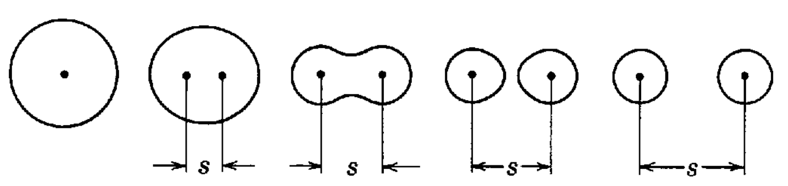
Figure 4.3: Schematic stages of nuclear fission. Source [10].
In the liquid-drop model, the fission process is described by a deformation parameter \(s\) (Fig. 4.3),
characterizing the elongation and eventual separation of the nucleus.
For small \(s\), the Coulomb energy changes little, while the surface energy increases rapidly, causing \(V(s)\) to
rise. As \(s\) grows, the nucleus develops two lobes connected by a narrow neck and eventually separates into
two fragments. After separation, the surface energy remains approximately constant, while \(V(s)\)
decreases due to the decreasing Coulomb repulsion between the fragments (see A.5 for more
details).
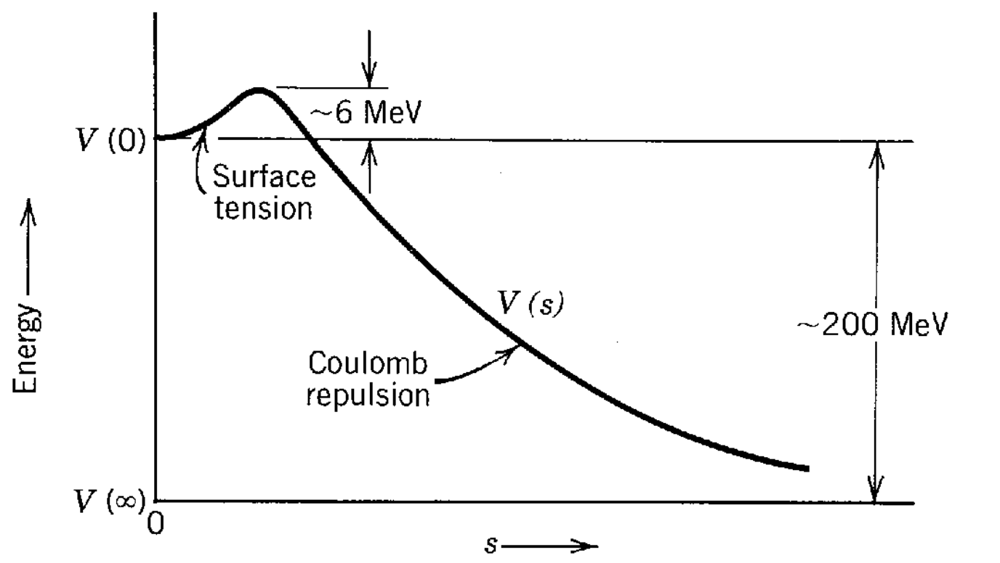
Figure 4.4: Potential energy as a function of deformation for a fissionable nucleus. Source [10].
Because \(V(s)\) first increases and then decreases, a barrier appears. Liquid-drop calculations give a barrier
height of about \(6~\mathrm {MeV}\) above \(V(0)\) for heavy nuclei, while \(V(0)\) lies roughly \(200~\mathrm {MeV}\) above \(V(\infty )\). The nucleus therefore occupies a
potential well and is stable against fission. Spontaneous fission can occur via quantum-mechanical
tunnelling. However, probability is rather small. If \(\ce {^{238}_{92}U}\) decayed only by spontaneous fission, its lifetime would
be of order \(10^{16}\) yr.
How can we provide the nucleus with the activation energy necessary to overcome the barrier for the
fission process to occur? The simplest way is to have a neutron absorbed by the nucleus.
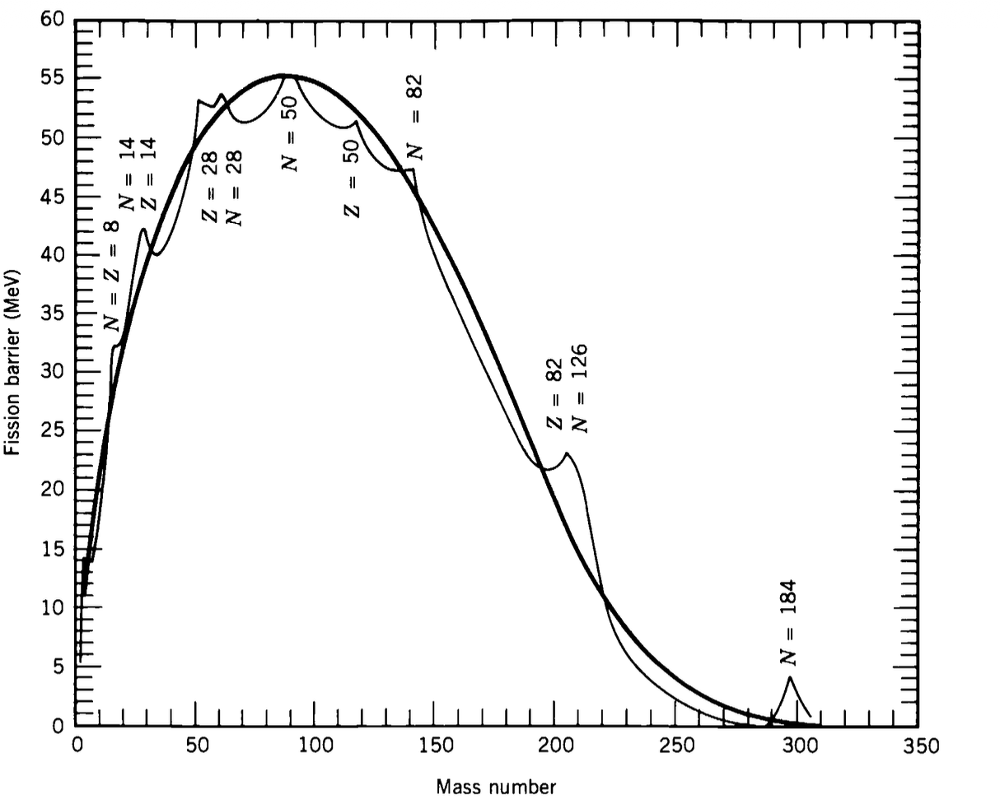
Figure 4.5: Variation of fission activation energy with mass number. The dark curve is based on
the liquid-drop model, calculated only for the most stable isotope at each mass number. The light
curve shows the effect of including shell model effects. Source [11].
Natural uranium consists of two isotopes: \(\ce {^{238}_{92}U}\) (99.3%) and \(\ce {^{235}_{92}U}\) (0.7%). When \(\ce {^{235}_{92}U}\) captures a neutron (with
almost zero kinetic energy), they merge forming an intermediate compound nucleus in an excited state \(\ce {^{236}_{92}U^*}\),
with extra energy that can be estimated as follows:
The activation energy for \(\ce {^{236}_{92}U}\) is 6.2 MeV (see Fig. 4.5).
Thus, the energy required to excite \(\ce {^{236}_{92}U}\) into a fissionable state is exceeded by the energy gained when \(\ce {^{235}_{92}U}\)
captures a neutron. Consequently, \(\ce {^{235}_{92}U}\) can undergo fission with thermal neutrons (neutrons of almost zero
kinetic energy).
A similar calculation for \(\ce {^{238}_{92}U}\) gives \(E_\text {ex} = 4.8~\text {MeV}\), which is smaller than the calculated activation energy of \(6.6~\text {MeV}\) for \(\ce {^{239}_{92}U}\).
Neutrons with energies of at least several MeV (fast neutrons) are therefore required for fission of
\(\ce {^{238}_{92}U}\).
The difference between \(\ce {^{235}_{92}U}\) and \(\ce {^{238}_{92}U}\) arises mainly from the pairing term in the semi-empirical mass formula.
Adding a neutron to \(\ce {^{235}_{92}U}\) converts an even-odd nucleus into an even-even nucleus, increasing the binding
energy (and thus decreasing the mass). In contrast, adding a neutron to \(\ce {^{238}_{92}U}\) produces an even-odd
nucleus, which provides a smaller energy gain compared to the even-even case. The pairing
term enters with opposite sign, favouring fission of even-odd nuclei such as \(\ce {^{235}_{92}U}\) with thermal
neutrons.
Notice that fission is not the only possible outcome. The compound \(\ce {^{236}_{92}U}\) may capture the neutron and
de-excite by emitting a gamma ray before it undergoes the deformation required for fission:
As we just
saw, for neutrons interacting with \(\ce {^{238}_{92}U}\), the neutron energy is insufficient to overcome the deformation energy
required for fission. Therefore, capture followed by gamma emission is the dominant mode:
The fission of \(\ce {^{235}_{92}U}\) typically produces two fission fragments with \(A \approx 95\) and \(A \approx 140\), \(2\)–\(3\) prompt neutrons,
neutron-rich fragments that undergo successive \(\beta \) decays toward stability, and prompt \(\gamma \) rays
as well as \(\gamma \) rays from fragment de- excitation. A summary of the energy release is given in
Table 4.1.
Table 4.1: Distribution of energy release in the induced fission of \(\ce {^{235}_{92}U}\). Source [12]
MeV
Kinetic energy of fission fragments
167
Kinetic energy of fission neutrons
5
Energy of prompt \(\gamma \) rays
6
Sub-total (immediate)
178
Electrons from subsequent \(\beta \) decays
8
\(\gamma \) rays following \(\beta \) decays
7
Sub-total (delayed)
15
Neutrino energy
12
Total
205
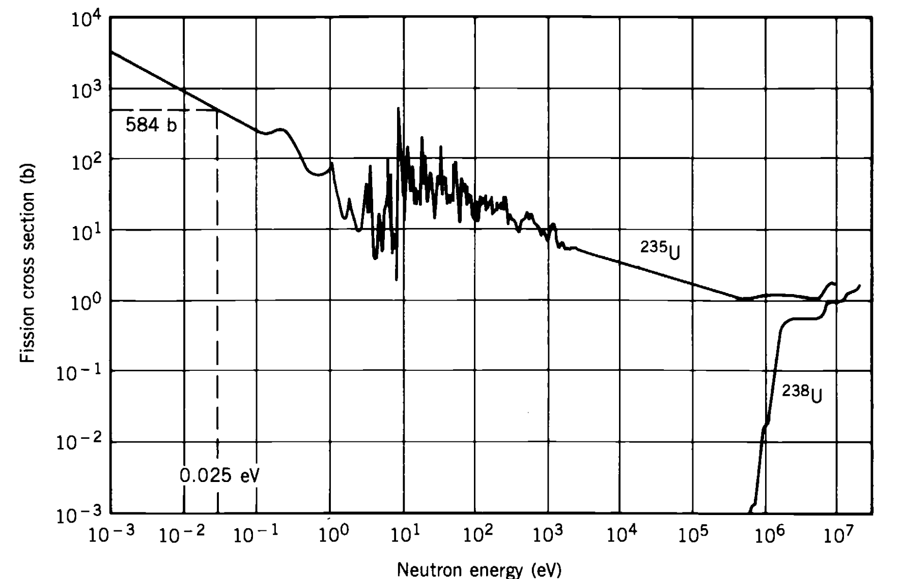
Figure 4.6: Cross sections for neutron-induced fission of \(\ce {^{235}_{92}U}\) and \(\ce {^{238}_{92}U}\). Source [4].
The use of fission for power generation relies on the emission of \(2\)–\(3\) neutrons per fission. We define the
neutron multiplication factor \(k\) as
\begin{equation*} k = \frac {\text {number of neutrons produced at stage } n+1} {\text {number of neutrons produced at stage } n} \,. \end{equation*}
The value of \(k\) depends on the fraction of neutrons that induce further
fission rather than escaping or being captured.
The multiplication factor determines the criticality of a nuclear system:
\(k<1\): the chain reaction dies out.
\(k>1\): the reaction grows exponentially until the fissile material is depleted.
\(k=1\): a steady, controlled reaction.
The control of fission is an important consideration for the nuclear industry. Further details can be found
in [4, 12].
An important quantity is the fission cross section shown in Fig. 4.6. Consider a mixture of \(\ce {^{235}U}\) and \(\ce {^{238}U}\),
where \(F\) is the fractional abundance of \(\ce {^{235}U}\) (\(F \approx 0.0072\) for natural uranium). To calculate the neutron multiplication
factor \(k\), we first define the relevant cross sections and fission probabilities. The total cross section,
weighted by isotopic abundance, is
where \(\sigma _f\) and \(\sigma _c\) are the fission and capture cross sections, respectively.
The probability that a neutron interacts with a given isotope and induces fission is
Since \(k < 1\), a self-sustaining chain reaction is impossible in natural uranium with fast neutrons. Therefore,
either the uranium must be enriched (increase \(F\)) or neutrons must be moderated to thermal energies,
where \( \sigma _f^{\ce {^{235}U}}\) is significantly higher. In a more realistic calculation neutron leakage and absorption in non-fissile
materials must also be considered.
Fusion involves the amalgamation of two nuclei of very low mass number (\(A\)) to form a more stable
nucleus. The increased stability arises because the \(A\) value of the resulting nucleus moves closer to \(A \approx 60\), where
the binding energy per nucleon is maximized (see Fig. 2.2). From the perspective of the liquid drop
model, nuclei with very low \(A\) have a relatively large surface area compared to their volume, reducing
stability. Although the Coulomb energy increases during fusion, its magnitude is initially too small to
prevent the process because nuclei of low \(A\) also have low proton numbers (\(Z\)). We have already studied an
example of fusion reaction in section 4.1.1.
The process began around \(t \sim 200\) s after the Big Bang, marking the era of primordial nucleosynthesis. At this
stage, baryonic matter consisted of roughly 88% protons and 12% neutrons. Initially, the creation of
deuterium nuclei (\(d = \ce {^{2}_{1}H}\)) via neutron-proton fusion
\begin{equation*} \ce {n + p -> d + \gamma } \quad (Q = 2.22\,\text {MeV}) \end{equation*}
was in equilibrium with its inverse reaction,
photo-disintegration:
Because there is no stable
mass-5 nucleus and \(\ce {^8Be}\) is unstable, two \(\ce {^4He}\) nuclei cannot combine directly. A small amount of mass-7 nuclei
was produced:
Essentially all neutrons
ended up in \(\ce {^4He}\), which constitutes about 24% of the baryonic mass. Only traces of deuterium, \(\ce {^3He}\), and \(\ce {^7Li}\) remain.
Most baryonic mass was still free protons. Later stellar synthesis of heavier nuclei has not significantly
altered this composition. The observed hydrogen-to-helium ratio (Fig. 4.7) agrees well with theoretical
predictions.
The net reaction \(\ce {4p -> ^4He + 2e+ + 2\nu _e}\) releases 24.69 MeV. Including positron annihilation, the
total energy release is 26.73 MeV, with 0.3 MeV lost to neutrinos. The first reaction is the slowest
because it requires a weak interaction, governing stellar lifetime. For the Sun, this phase lasts
\(\sim 10^{10}\) years.
After hydrogen depletion, stellar cores contract. Stars like the Sun reach \(T \sim 10^8\ \text {K}\), triggering helium burning.
Nuclei heavier than \(\ce {^4He}\) form via the triple-alpha process:
This reaction is a “bottleneck” because \(\ce {^8Be}\) is highly
unstable, decaying back into alpha particles in \(10^{-16}\) seconds. Carbon production only succeeds because \(\ce {^{12}C}\) has
an excited state (the Hoyle state) at 7.65 MeV, just above the combined mass-energy of \(\ce {^8Be} + \ce {^4He}\), which creates a
resonance that accelerates the process.
Massive stars burn heavier fuels (C, Ne, O, Si). Carbon fusion includes several branches:
The
neutron-producing branch is endothermic. Similar reactions build elements from carbon to iron
(\(A \approx 56\)).
Elements heavier than iron are not formed by fusion, since \(A > 60\) exceeds the binding energy maximum; see
figure 2.2. Nuclei up to \(\ce {^{209}Bi}\) are produced by successive neutron captures and \(\beta \) decays. Abundances are
inversely proportional to neutron capture cross sections; nuclei that capture neutrons easily are quickly
converted, resulting in lower relative abundances.
Ionizing radiation includes photons (X-rays and \(\gamma \) rays), electrons and positrons (\(\beta \) particles),
muons, protons, neutrons, alpha particles, and heavy nuclei. These radiations differ in mass,
charge, and interaction mechanism, resulting in different patterns of energy deposition in
tissue.
The absorbed dose is measured in gray (Gy), defined as 1 Gy = 1 J kg\(^{-1}\), representing energy
deposited per unit mass. Because different radiation types produce different biological effects for
the same absorbed dose, the equivalent dose is introduced. It is measured in sievert (Sv)
and defined by
\begin{equation*} H = W_R \, D, \end{equation*}
where \(H\) is the equivalent dose (Sv), \(D\) is the absorbed dose (Gy), and \(W_R\) is the
radiation weighting factor. Higher \(W_R\) corresponds to greater biological damage per unit absorbed
energy.
\(W_R\) reflects how densely energy is deposited along the track. A slow \(\alpha \) particle, with roughly 8000 times
the mass of an electron and double its charge, produces dense ionization along a short track. An electron
depositing the same energy produces less dense ionization, while a photon spreads energy more sparsely.
Consequently, equal absorbed doses from different radiation types do not produce equal biological effects; \(\alpha \)
particles, fission fragments, and heavy nuclei are assigned larger weighting factors. Radiation weighting
factors used in dose calculations are summarised in Table 5.1. For neutrons, \(W_R\) depends strongly
on energy because the effectiveness of energy transfer to recoil nuclei varies with neutron
energy.
Radiation Type and Energy Range
\(W_R\)
X-rays and \(\gamma \) rays, all energies
1
Electrons, positrons and muons, all energies
1
Neutrons, \(E < 10\) keV
5
Neutrons, \(10\) keV to \(100\) keV
10
Neutrons, \(> 100\) keV to \(2\) MeV
20
Neutrons, \(> 2\) MeV to \(20\) MeV
10
Neutrons, \(> 20\) MeV
5
Protons (other than recoil protons), \(E > 2\) MeV
2–5
\(\alpha \) particles, fission fragments and heavy nuclei
20
Table 5.1: Radiation weighting factors \(W_R\) used in calculating equivalent dose.
Humans are continuously exposed to radiation from natural and artificial sources. Natural sources include
cosmic radiation, terrestrial radionuclides in soil and building materials, radon gas in the atmosphere, and
radionuclides within the body. Approximately 80% of total radiation exposure arises from natural
sources.
The worldwide average annual effective dose is approximately \(2.4~\text {mSv}\). In the United Kingdom it is about \(2.6\)–\(2.7~\text {mSv}\).
Medical imaging is the principal artificial source for most individuals. Typical effective doses
are: dental X-ray \(0.005~\text {mSv}\), chest X-ray \(0.014~\text {mSv}\), CT scan of the head \(1.4~\text {mSv}\), CT scan of the chest \(6.6~\text {mSv}\), and CT scan
of the whole spine \(\approx 10~\text {mSv}\). A transatlantic flight contributes \(\approx 0.08~\text {mSv}\) due to cosmic radiation at altitude.
Radon exposure varies geographically; the UK average is \(1.3~\text {mSv}\), while in Cornwall it can reach
\(6.9~\text {mSv}\).
Radiation effects are classified as deterministic or stochastic. Deterministic effects have a threshold
and increase in severity with dose. Observable changes in blood cell counts occur at \(100~\text {mSv}\). Whole-body doses
of \(\approx 1~\text {Sv}\) produce acute effects including nausea and reduced white blood cell count. Doses of \(4\)–\(5~\text {Sv}\) delivered
over a short period are lethal to \(\approx 50\%\) of individuals. Stochastic effects, principally carcinogenesis
and mutagenesis, have no threshold. The probability of occurrence increases with dose, but
severity does not. For occupational exposure, the annual limit for nuclear industry workers is
\(20~\text {mSv}\).
An inexperienced researcher weighing \(69.1~\text {kg}\) has absorbed \(1.34 \times 10^{7}\) neutrons, each having a kinetic energy of \(2.45~\text {MeV}\). What is
the equivalent dose of radiation absorbed by this person?
The \(\alpha \)-particle comes from \(r \to -\infty \) and reaches point \(r \to \infty \) after scattering. During this process, the angle \(\phi \) changes
from \(\phi = 0\) to \(\phi _{\max } = \pi - \theta \). Integrating Eq. A.1 yields
You can find the derivation in various textbooks. Here I follow section 6.1 of [5].
If the particle comes in with an impact parameter between \(b\) and \(b + db\), it will emerge with a scattering
angle between \(\theta \) and \(\theta + d\theta \). More generally, if it passes through an infinitesimal area \(d\sigma \), it will scatter into a
corresponding solid angle \(d\Omega \) (Figure A.2).
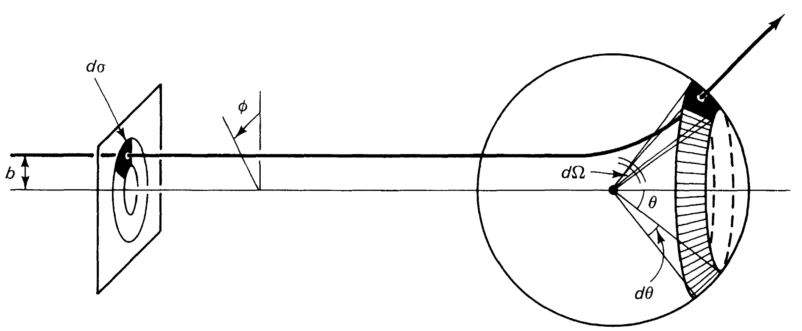
Figure A.2: Particle incident in area \(d\sigma \) scatters into solid angle \(d\Omega \). Source [5]
The mean lifetime \(\tau \) of the unstable particles is the time-average of the statistically varying decay times \(t\) of
the individual particles, integrated from \(t=0\) to \(t=\infty \) and weighted by the number \(\lambda N(t)\) of particles decaying within
the interval \(dt\).
and \(T_{\mathrm {cm}}^{\,i}\) is the kinetic energy of particle \(i\) with respect to the
centre-of-mass frame, while \(T_{\mathrm {cm}}^{\mathrm {tot}}\) is the total kinetic energy in the CoM frame. Furthermore,
\begin{equation*} T_{\mathrm {CoM}} = \frac {1}{2} M v_{\mathrm {CoM}}^2, \quad M = \sum _i m_i, \end{equation*}
is
the kinetic energy of the system as a whole moving with velocity \(\mathbf {v}_\mathrm {CoM}\). This is König’s second
theorem.
Consider two particles with masses \(m\) and \(M\). In the laboratory frame, particle 2 (mass \(M\)) is at rest and
particle 1 (mass \(m\)) moves with velocity \(\mathbf {v}_1 = \mathbf {v}\). The CoM velocity is
\begin{equation*} T = T_{\mathrm {cm}}^{\mathrm {tot}} + T_{\mathrm {CoM}} \quad \Rightarrow \quad T_{\mathrm {cm}}^{\mathrm {tot}} = T - T_{\mathrm {CoM}} = \frac {M}{m+M} T. \end{equation*}
Thus, in this two-particle example, the kinetic energy relative to the CoM frame is proportional to the
heavier particle’s mass, while the kinetic energy of the system as a whole is proportional to the lighter
particle’s mass.
To quantify the deformation, the nucleus can be modelled as a spheroid with semi-major axis \(a = R(1+\epsilon )\) and
semi-minor axes \(b = R(1+\epsilon )^{-1/2}\). For small elongations, the deformation parameter \(s\) is given by
\begin{equation*} s \approx 2 R \epsilon , \end{equation*}
where \(R\) is the radius of
the spherical nucleus; see Fig. A.3. Here, \(s\) represents the longitudinal extension of the spheroid, since
\begin{equation*} \Delta L = 2a - 2R = 2(R(1+\epsilon ) - R) = 2 R \epsilon . \end{equation*}
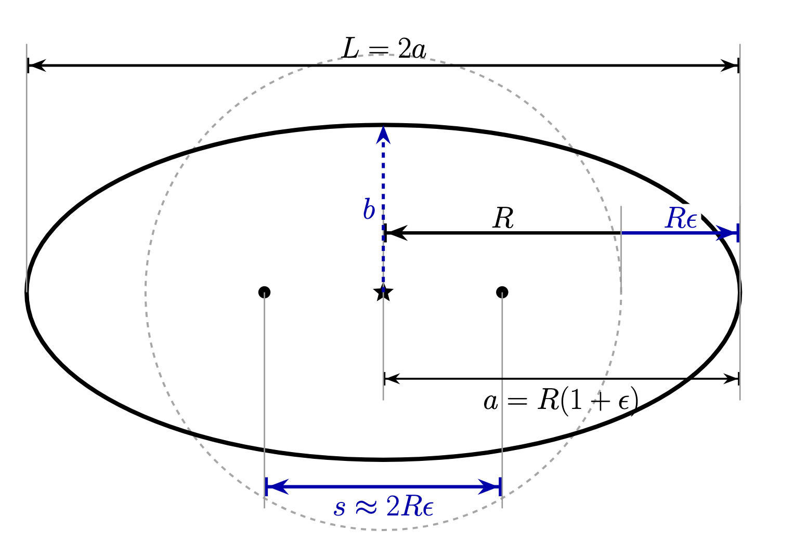
Figure A.3: Initial deformation of nucleus during fission.
For small deformations (\(\epsilon \ll 1\)), the surface and Coulomb energies can be expanded in a Taylor series and
retained up to second order in the deformation parameter \(\epsilon \). This yields
During your studies, you will encounter the Schrödinger equation. In one spatial dimension, for a particle
of mass \(m\) moving along the \(x\)-axis under the influence of a potential \(V(x,t)\), the time-dependent Schrödinger
equation is:
where \(\Psi (x,t)\) is the complex-valued wave function of the particle.
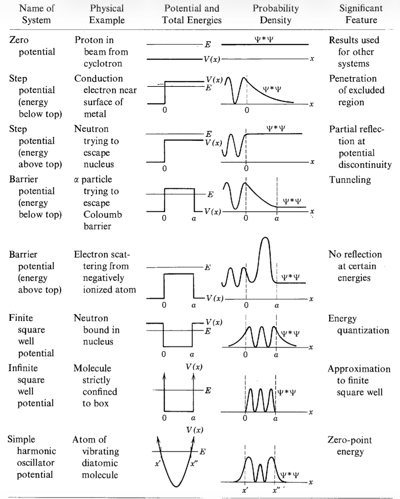
Table B.1: Some basic quantum mechanical systems. Source [10].
The connection between the wave function and the behaviour of the associated particle is provided by
Born’s postulate, which relates the wave function to the probability density \(\rho (x,t)\):
where \(\Psi ^{*}(x,t)\) denotes the complex
conjugate of \(\Psi (x,t)\).
Born’s postulate may be stated as follows: if, at the instant \(t\), a measurement is made to locate the
particle associated with the wave function \(\Psi (x,t)\), then the probability \(P(x,t)\,dx\) that the particle will be found between
the coordinates \(x\) and \(x + dx\) is:
The wave function allows the extraction of information not only about a
particle’s position, but also about its momentum, energy, and all other quantities that characterize its
behaviour.
In your Quantum Mechanics course, you will solve the Schrödinger equation for various forms of the
potential \(V(x,t)\) and energy \(E\). Table B.1 provides a summary of some basic quantum mechanical
systems.
In the rest frame of the parent particle, \(\mathbf {p}_A = - \mathbf {p}_B\), so \(\mathbf {p}_A \cdot \mathbf {p}_B = - \mathbf {p}_A^2\). Substituting \(E_B = Mc^2 - E_A\), we get
Equating the laboratory expression for \(s\) with the threshold value \(s_{\rm thresh}\) allows us to solve for the incident
energy required in the lab frame:
In special relativity, the length of a worldline between two events is an invariant quantity. As
first introduced by Minkowski [14], the invariant quantity
is obtained by integrating along the spacetime path of the
particle, and therefore depends on the worldline connecting the events. Ideal clocks in relativity
can be thought of as “odometers”, recording the “length” of the worldline on which they
move. In this sense, a clock always measures its own proper time, corresponding to the time
elapsed in a frame where it is locally at rest. For a particle in inertial motion between two
events, the worldline is a straight line. In this case, the path-dependent integral simplifies to:
where \(\tau _{\text {life}}\) is the mean proper lifetime. By treating these decays
as a physical clock and defining the passage of proper time \(d\tau \) by the observed fractional decay \(dN/N\), the clock
rate is:
When a particle moves relative to an
observer, its lifetime is dilated by the Lorentz factor \(\gamma \). Consequently, the elapsed coordinate time\(\Delta t\)
observed in the observer’s frame for the same decay process is
\begin{equation*} \Delta t = \gamma \, \Delta \tau . \end{equation*}
This follows from the invariance of the
spacetime interval:
Note that all observers will agree on the number of particles that have decayed, \(dN\), as this is a physical
event. However, observers in different frames will measure different elapsed times for these decays to
occur.
Alice and Bob are on Earth and each possess a box containing the same amount of a radioactive
substance with a proper mean lifetime \(\tau _\text {life} = 6\) years. Alice remains stationary on Earth, while Bob travels away
at \(v = 0.8c\) , with respect to Earth, to a destination 4 light- years away and immediately returns at the same
speed.
Based on the discussion above, although the boxes carried by Alice and Bob will contain different
amounts of radioactive substance when they meet again, they must agree on the number of nuclei
remaining in each box.
Figure C.1: Spacetime diagram showing the worldlines for Alice and Bob.
The situation is illustrated in Fig. C.1. Because proper time is Lorentz invariant, it provides a
straightforward way to calculate the elapsed time along each trajectory.
Lorentz Boosts
Suppose we want the outgoing part of Bob’s trip to lie along the time axis (see Fig. C.2). We can use
the invariance of the interval to determine the meeting point of Alice and Bob in this frame. Let this
event have coordinates \((x, ct)\). For Alice, who starts at \((0,0)\), the interval to the meeting point is
Figure C.2: Alternative space-time diagrams. The geometry remains consistent as the invariant
length of the worldlines is preserved for Lorentz boost.
What we did above, in terms of coordinate systems, was a rotation (boost) in the \(ct\)-\(x\) plane.
As you learn, the transformations that preserve the spacetime interval
In this
new frame, Alice appears to travel to \(x' = -40/3\) light-years over a coordinate time of \(ct' = 50/3\) years. Substituting these into
the interval formula, the proper time along her worldline remains the same:
So in the boosted
frame, Bob is at rest at \(x' = 0\) with coordinate time \(ct' = 3\).
We can also use a frame where Bob appears at rest during the incoming journey, the second situation
in figure C.2. We have \(\beta = -4/5\), \(\gamma = 5/3\)
The important point is that if we have quantities or equations that are Lorentz invariant, we can
perform calculations in whichever frame is more convenient.
Analysis from Each Observer’s Perspective
Alternatively, each observer can use their own point of view to describe the situation of the other’s
box. Each observer uses their own Lorentz frame and explains the effect by noting that a moving clock
runs slower. The decay for the moving radioactive box is described using the dilated mean lifetime
\(\tau '\).
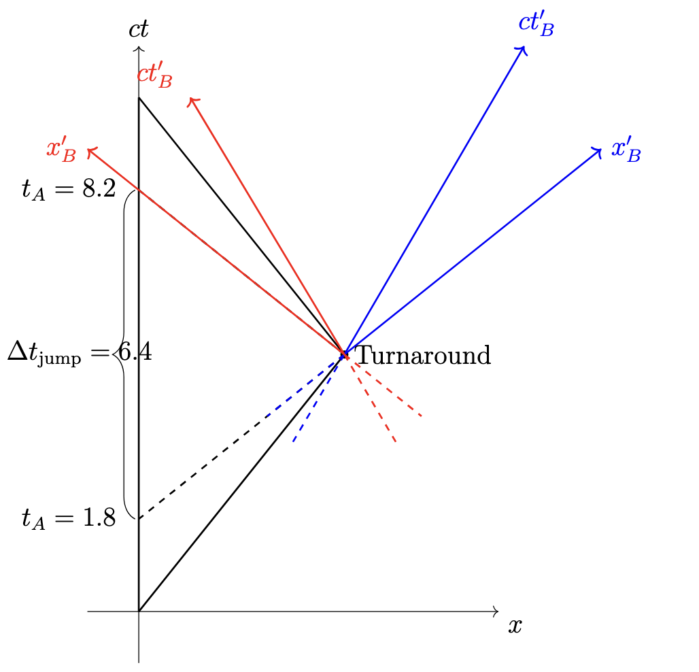
Figure C.3: Spacetime diagram showing simultaneity lines and the temporal “jump” for Bob.
From Alice’s perspective, Bob’s box moves at \(v = 0.8c\) with \(\gamma = 5/3\), giving:
From Bob’s perspective, there are two inertial frames. He observes Alice’s box
moving at \(v = 0.8c\) with the slower decay rate. During each leg (\(\Delta \tau _{B1} = \Delta \tau _{B2} = 3\) years):
When Bob reverses velocity, his change
in inertial frame causes a discontinuity in his definition of “now” in Alice’s frame. His lines of
simultaneity pivot, sweeping across a segment of Alice’s worldline:
This jump represents the portion of Alice’s history that Bob’s change of coordinate
systems “skipped” during the turnaround. To maintain a consistent count of \(N_A\), Bob must account for the
decays that occurred during this interval in Alice’s frame:
Figure C.4: Spacetime diagram where both twins accelerate
Sometimes it is stated that the twin who felt the acceleration is the one that ages slower. However,
you can convince yourself that this cannot be the real explanation by looking at Fig. C.4. Here, after 4
years on Earth, Alice moves away to a point 0.8 light-years at a speed of \(0.8c\) and then immediately returns.
Alice’s new proper time:
Bob will still be younger than Alice. The proper time is determined by the
specific path taken through spacetime. The only constraint is that their paths need to meet again so as
to be able to compare clocks. The non-intuitive part is that the path that looks shorter in
Euclidean space, the straight line path from 0 to 10 in Earth’s frame, is the longest in Minkowski
space.
Physical vs Coordinate Effects
I introduced the radioactive box for two reasons. The first is that this is an Appendix in a subatomic
course, where we introduced lifetime. The second, and perhaps more important, is that it shows we are
not dealing with just an abstract coordinate description; there is a real physical consequence: The two
boxes start with the same amount of radioactive material, but when they meet again, they contain
different amounts.
Wolfgang Demtröder. Nuclear and Particle Physics. Undergraduate Lecture Notes in Physics.
Springer, 2022.
[2]
Hans Geiger and Ernest Marsden. On a diffuse reflection of the \(\alpha \)-particles. Proceedings of
the Royal Society of London. Series A, Containing Papers of a Mathematical and Physical
Character, 82(557):495–500, 1909.
[3]
Bogdan Povh, Klaus Rith, Christoph Scholz, Frank Zetsche, and Werner Rodejohann.
Particles and Nuclei: An Introduction to the Physical Concepts. Graduate Texts in Physics.
Springer-Verlag Berlin Heidelberg, 7 edition, 2015.
[4]
Kenneth S. Krane. Introductory Nuclear Physics. John Wiley & Sons, New York, 1987.
[5]
D. Griffiths. Introduction to Elementary Particles. John Wiley & Sons, 2nd edition, 1987.
[6]
A. Einstein. Ist die Trägheit eines Körpers von seinem Energieinhalt abhängig? (Does the
Inertia of a Body Depend Upon its Energy-Content?). Annalen Phys., 323(13):639–641, 1905.
[7]
Alexander Belyaev and Douglas Ross. The Basics of Nuclear and Particle Physics.
Undergraduate Texts in Physics. Springer, 2021.
[8]
Francesco Romanelli. Physics of Nuclear Energy: Foundations Towards Fusion Energy.
Springer Series in Plasma Science and Technology. Springer Nature Singapore, 2024.
[9]
Max Born. Atomic Physics. Dover Publications, 1989. Reprint of a classic work on atomic
physics.
[10]
Robert Eisberg and Robert Resnick. Quantum Physics of Atoms, Molecules, Solids, Nuclei,
and Particles. John Wiley & Sons, New York, 2nd edition, 1985.
[11]
William D. Myers and Wladyslaw J. Swiatecki. Nuclear masses and deformations. Nucl.
Phys., 81:1–60, 1966.
[12]
W. N. Cottingham and D. A. Greenwood. An Introduction to Nuclear Physics. Cambridge
University Press, Cambridge, 2 edition, 2001.
[13]
Wolfgang Demtröder. Atoms, Molecules and Photons: An Introduction to Atomic-, Molecular-
and Quantum Physics. Graduate Texts in Physics. Springer, 2018.
[14]
Hermann Minkowski. Space and time. In Arnold Sommerfeld, editor, The Principle of
Relativity, pages 73–91. Dover Publications, New York, 1952. English translation of the 1908
lecture “Raum und Zeit”.